从组合电路到时序电路 — 为什么我们需要"记忆"
你在第 3 章见过的电路有个共同点
加法器、译码器、MUX —— 同样的输入永远给出同样的输出。它们本质上是一个纯函数 y = f(x)，按一下输入端，输出端立刻就对应变了。这种电路叫组合逻辑（combinational logic）。
但现实世界很多需求不是"纯函数"
- 电梯按 5 楼按钮：现在在 1 楼就上去，现在已经在 5 楼则不动 —— 同样按 5，行为不同。
- 空调按一下"+":温度从 22 变 23，再按一下变 24 —— 同样按"+"，输出不同。
- 密码锁输入
1-2-3-4才开 —— 第 4 次按 4 是否开锁，要看前 3 次按了什么。
这些场景共同的特征：电路必须"记得"过去发生过什么，否则无法决定当前该输出什么。
本章你将学到的东西，分三层
- 理论层：状态机（FSM）— 描述"过去综合 + 当前输入 → 下一动作"的纯数学模型。
- 元件层：锁存器、触发器 — 能在硬件里把一个 0/1 "存住"的最小单元。
- 系统层：把元件搭起来 + 时钟节拍，造出寄存器、计数器、移位寄存器这些"看起来有记忆"的部件。
return x+y这种纯函数；时序逻辑像带 self.counter 字段的对象，方法的返回值取决于内部状态。第 4 章 时序逻辑电路 · 封面
章节封面，列出本章四讲：① 概述 ② 锁存器和触发器 ③ 同步时序电路设计 ④ 典型部件设计。我们这一份讲稿先吃掉第一讲（概述），约 p2–p10。
时序电路导读：把"计算需求"分成两类
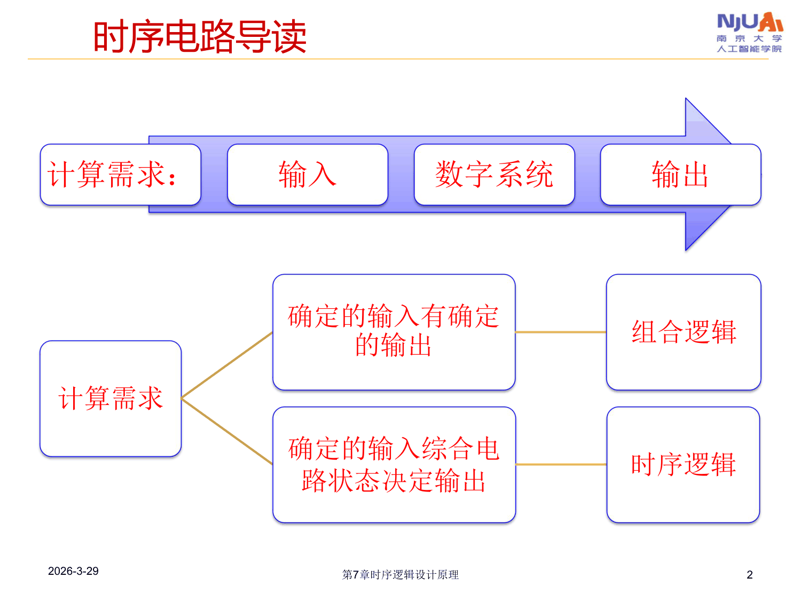
这页在说什么
所有数字系统都做一件事：输入 → 处理 → 输出。但根据"输出是怎么决定的"，能分成两类：
| 类型 | 输出由谁决定 | 电路类别 |
|---|---|---|
| 类型 ① | 仅由当前输入决定 | 组合逻辑（第 3 章） |
| 类型 ② | 由当前输入 + 电路状态共同决定 | 时序逻辑（本章） |
导读：温控例子 — 为什么组合逻辑搞不定
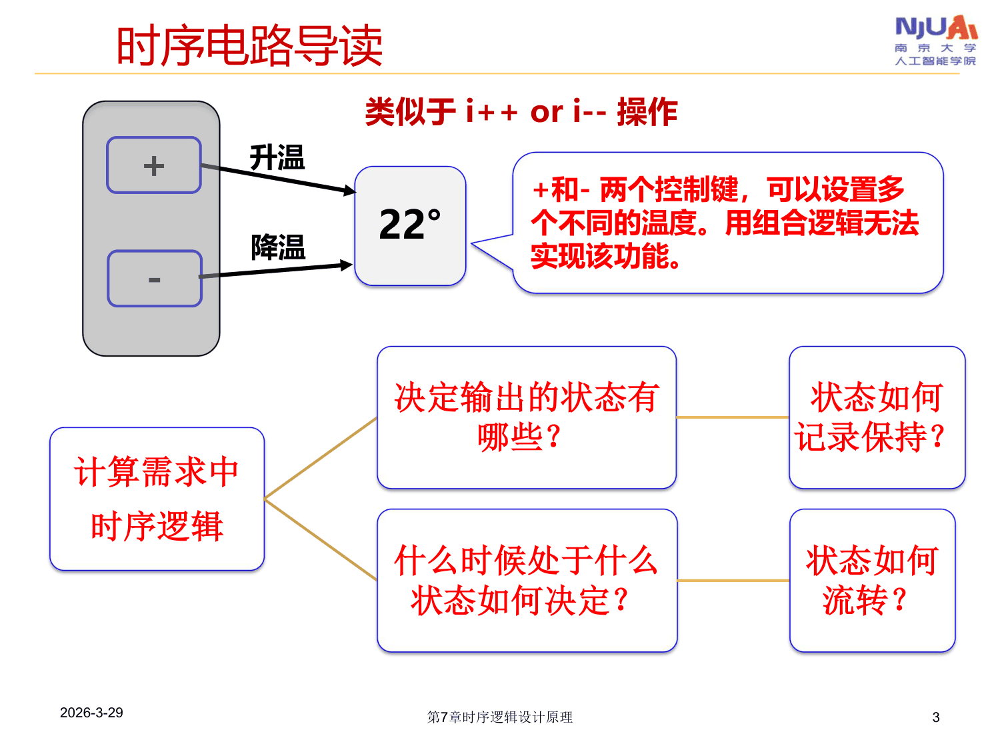
例子：空调上有两个按钮 + 和 -
当前温度 22°。按一下 + → 变 23°；再按一下 + → 变 24°。同样的输入「按+」，却得到不同的输出。这是纯组合逻辑没法实现的，因为组合逻辑里"同输入永远同输出"。
counter++ 的硬件版本。counter 这个变量的当前值，就是电路的"状态"。本章要回答的四个核心问题
- 有哪些状态？ —— 比如温度可以是 16/17/…/30，共 15 个状态。
- 状态怎么记录/保持？ —— 用什么硬件元件把当前温度"存住"？（答：触发器，第二讲）
- 什么时候处于什么状态？ —— 何时该切换？由谁触发？（答：时钟边沿，本讲 §1.3）
- 状态怎么流转？ —— 从 22 按 + 应该去哪个状态？（答：状态机的转移函数，§1.1）
这四问构成本章的骨架：状态集 / 存储 / 定时 / 转移。后面所有内容都是在某一格里填细节。
第一讲 时序逻辑电路概述 · 标题页
第一讲的内部三小节：① 时序逻辑与有限状态机 ② 基本结构 ③ 定时。下面正式开讲。
什么是"状态"（State） — 用程序变量打比方
软件里的"状态"你早就会用
int counter = 0;
void on_button_plus() {
counter = counter + 1; // 新值依赖旧值
}
这里 counter 就是状态。它有三个关键属性：
- 能存值：函数返回后，
counter的值还在。 - 能读旧值：下次计算
counter + 1用的是上次留下的值。 - 能被写新值：赋值发生在某个"时刻"。
硬件里没有变量，只有线和门
那"存一个值"这件事怎么办？答案是用一种特殊电路 —— 它有反馈，能让一个 0 或 1 "卡住"不动，直到主动写入新值。这就是锁存器/触发器（latch/flip-flop），下一讲的主角。本讲你只要记住：硬件世界里"状态" = 一组触发器里存着的 0/1 组合。
两个必记术语
| 术语 | 含义 | 程序类比 |
|---|---|---|
| 现态 (current state) | 触发器里此刻存着的值 | counter 当前值 |
| 次态 (next state) | 下一个时钟边沿后，触发器将变成的值 | counter+1 算出的新值 |
组合逻辑 vs 时序逻辑 — 正式定义
把两类电路的定义并排放
| 组合逻辑 | 时序逻辑 | |
|---|---|---|
| 输出 | = f(当前输入) | = f(当前输入, 当前状态) |
| 有无存储元件 | 无 | 有（用于存"过去"） |
| 同输入同输出？ | 是 | 不一定 |
幻灯片末尾的三个关键词
- 表征工具 — 用什么数学模型来描述？答：有限状态机（FSM），下页讲。
- 状态记忆 — 用什么硬件来存？答：锁存器/触发器，第二讲。
- 状态流转 — 状态之间怎么切换？答：在时钟边沿，按预定规则。本讲 §1.2、§1.3。
有限状态机（FSM） — 不依赖硬件的纯数学模型
FSM 是什么
FSM (Finite State Machine) 是一个抽象模型，跟电路无关，你可以用纸笔画、用 Python 写、用电路实现。它捕获了"状态 + 输入 → 下一状态"这种行为的本质。
形式定义（教科书五元组）
- Q：所有可能状态的集合（有限个）。例：{开门, 关门, 锁定}。
- Σ：输入字母表。例：{投币, 按钮, 钥匙}。
- δ: Q × Σ → Q：转移函数。"当前在 q，看到输入 a，下一秒去哪？"
- q₀：初始状态。开机时从哪开始。
- F ⊆ Q：接受/终止状态集（数字电路里通常不用，理论模型才关心）。
生活例子：红绿灯
Q = {红, 黄, 绿}；输入 Σ = {计时器到}；转移 δ：红→绿→黄→红 循环；q₀ = 红。这就是一个最简单的 FSM，硬件实现就是一个 2 位计数器 + 译码器。
怎么画状态图
- 每个状态画一个圆圈。
- 箭头 = 转移，箭头上标注 "输入/输出"（如
1/0表示输入 1 时输出 0）。 - 初始状态额外标一下（有些书在状态圈里放个特殊符号或加一个无源箭头）。
FSM 实例：检测序列中是否出现连续 4 个 "1"
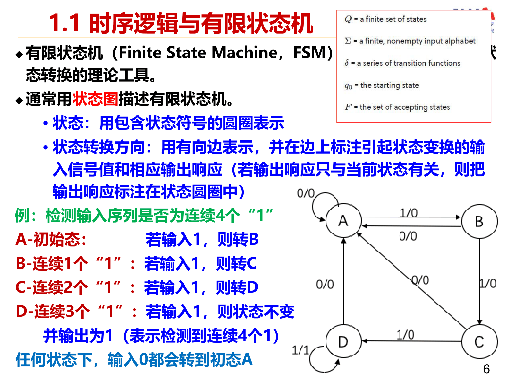
题目设定
电路逐位读入一串 0/1。只要看到"连续 4 个 1"就在那一刻输出 1，其余时刻输出 0。看到任何一个 0，"连续计数"清零。
状态怎么设计
| 状态 | 含义 |
|---|---|
| A | 初始 / 刚刚见到 0（连续 1 计数=0） |
| B | 已经连续见到 1 个 1 |
| C | 已经连续见到 2 个 1 |
| D | 已经连续见到 3 个或更多 1 |
转移规则（看图中箭头标 "输入/输出"）
- A 看到 1 → B (输出 0)；A 看到 0 → A (输出 0)。
- B 看到 1 → C (输出 0)；B 看到 0 → A (输出 0)。
- C 看到 1 → D (输出 0)；C 看到 0 → A (输出 0)。
- D 看到 1 → D 不动 (输出 1，第 4 个及以后的连 1)；D 看到 0 → A (输出 0)。
手工跑一遍：输入序列 1 1 0 1 1 1 1 0 1 1 1 1
| 步 | 1 | 2 | 3 | 4 | 5 | 6 | 7 | 8 | 9 | 10 | 11 | 12 |
|---|---|---|---|---|---|---|---|---|---|---|---|---|
| 输入 | 1 | 1 | 0 | 1 | 1 | 1 | 1 | 0 | 1 | 1 | 1 | 1 |
| 现态 | A | B | C | A | B | C | D | D | A | B | C | D |
| 次态 | B | C | A | B | C | D | D | A | B | C | D | D |
| 输出 | 0 | 0 | 0 | 0 | 0 | 0 | 1 | 1 | 0 | 0 | 0 | 1 |
用数字逻辑实现 FSM —— 三件事
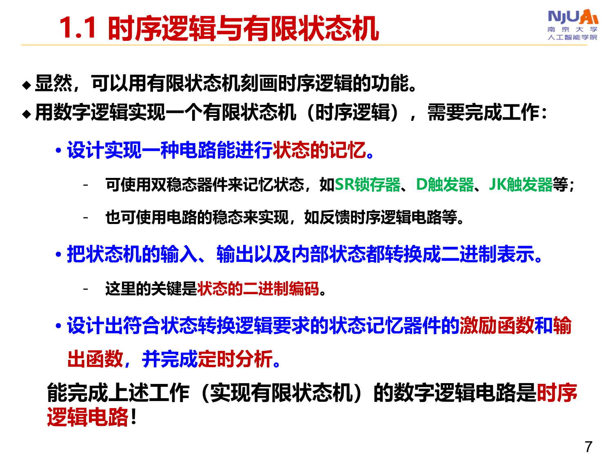
从"画在纸上的 FSM"到"焊在板上的电路"，要做三件事
- 选一种能记状态的硬件元件。
- 常用：SR 锁存器、D 触发器、JK 触发器（第二讲讲细节，这页只提名字）。
- "双稳态"= 这个元件天然有两个稳定状态，正好对应 0 和 1。
- 给状态做二进制编码。例如 4 个状态 A/B/C/D 编成 00/01/10/11，要 2 个触发器（2 位）才能存下。
编码不唯一，挑得好能让后续布尔函数更简单。这是第三讲的重要话题。
- 推导两组函数：
- 激励函数：告诉触发器在下一个时钟沿应该被写成什么 → 即"次态 = F(现态, 输入)"。
- 输出函数：告诉电路对外输出什么 → "输出 = G(现态, 输入)" 或 "输出 = G(现态)"。
Mealy 型 vs Moore 型 — 一句话区分
区别只在一处：输出函数 G 的参数
Moore: 输出 = G(现态)
- Mealy 输出会随输入立刻变化（在同一个时钟周期内，输入一变输出可能就变）。
- Moore 输出只跟现态走，输入变化必须等到下一个时钟沿、把状态切换了，输出才会变。Moore 更稳，但反应慢一拍。
生活类比：自动门
- Mealy 风格：传感器一感应到人（输入=1），同一瞬间就给开门信号，状态可能还没更新。
- Moore 风格：传感器感应到人 → 下一拍状态变成"开门中" → 这时候才输出开门信号。
状态图上怎么区分
| 输出标在哪 | |
|---|---|
| Mealy | 标在转移箭头上（"输入/输出"） |
| Moore | 标在状态圆圈里 |
时序电路基本结构 · Mealy 型
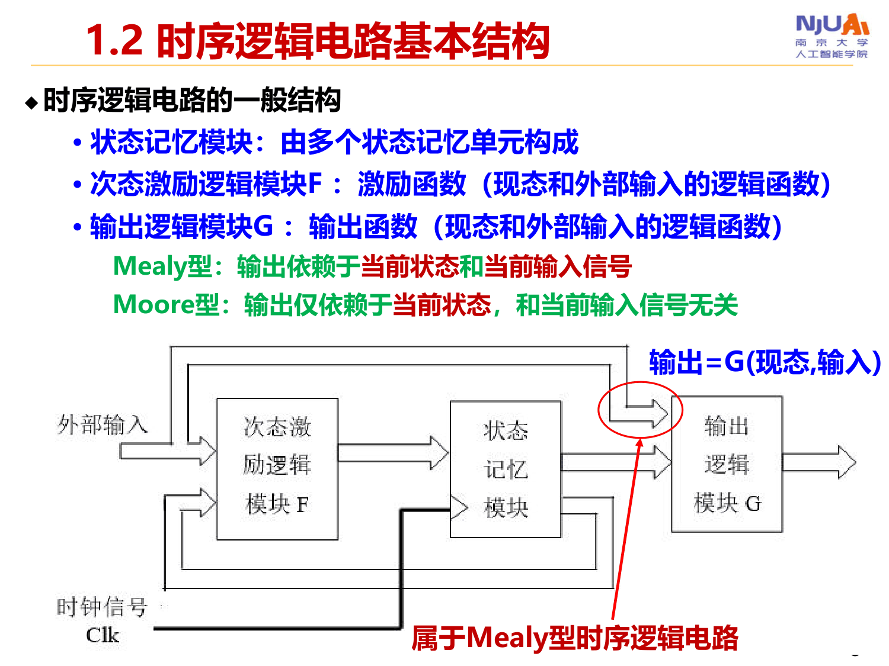
三模块结构
- 次态激励逻辑 F：纯组合电路。输入 = 外部输入 + 现态，输出 = 次态值（送给状态记忆）。
- 状态记忆模块：一组触发器。只在时钟边沿把次态写入，平时不动。
- 输出逻辑 G：也是纯组合电路。它的输入决定了型别 → 见下。
为什么这张图是 Mealy
注意图中红圈位置：外部输入这根线绕到了 G 模块里。也就是说输出 = G(现态, 输入) —— 符合 Mealy 定义。
时钟 Clk 的角色
Clk 只连到状态记忆模块。F 和 G 都是纯组合，没有时钟。"啥时候切换状态"完全由 Clk 边沿说了算 —— 这就是 §1.3 要展开的"定时"。
Moore 型结构 + 同步/异步分类
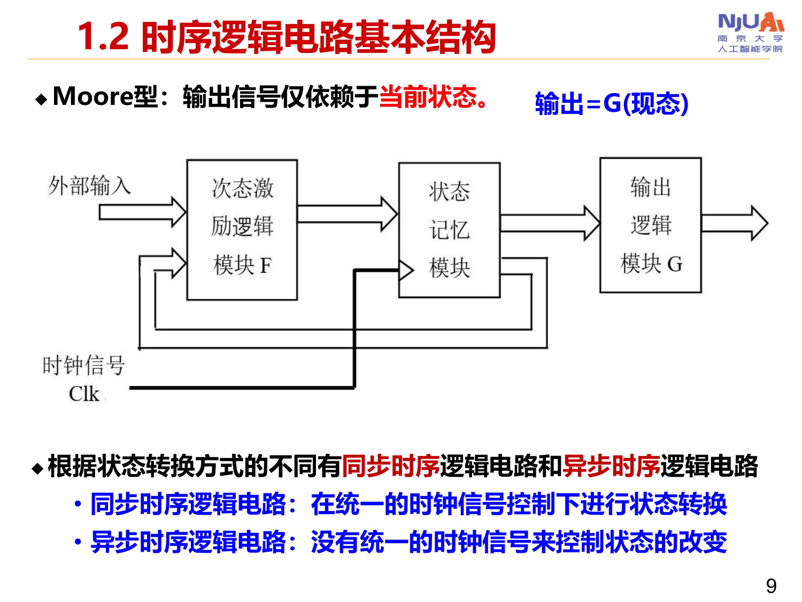
跟 p8 的 Mealy 图比，差在哪
外部输入不再接进 G。G 只看现态。所以 输出 = G(现态)，这就是 Moore。其它两块（F 和状态记忆）和 Mealy 一模一样。
同步 vs 异步（按状态切换方式分）
| 同步时序电路 | 异步时序电路 | |
|---|---|---|
| 切换时刻 | 所有触发器在同一个时钟边沿统一切换 | 无统一时钟，各部分各自切换 |
| 设计复杂度 | 低，主流 | 高，易竞争冒险 |
| 用途 | CPU、寄存器组、计数器等几乎一切 | 专用高速场景、握手协议 |
时钟信号 (Clock) — 硬件世界的节拍器
为什么数字电路需要时钟
每个门、每根线都有传播延迟（信号从输入端走到输出端要花一点时间，纳秒级）。如果让电路自由跑，不同路径延迟不一样，状态就会乱。时钟是"全场对表"的节拍：所有触发器都只在 Clk 边沿那一刻同步动作，前一拍走完才进入下一拍，秩序就来了。
三个必背术语
| 名称 | 含义 | 例：1 GHz CPU |
|---|---|---|
| 周期 tper | 一次完整高低电平循环的时长 | 1 ns |
| 频率 f | 1 / 周期 | 1 GHz |
| 占空比 | 高电平时间 / 周期 = tH / tper | 多数为 50 % |
"什么时刻动"的两种方式
- 电平触发：只要时钟保持在高（或低）电平，触发器就"敞开门"，输入变化会立刻穿过去。简单但在电平期间任何抖动都会传进去，容易出错。
- 边沿触发：只在时钟"上升那一瞬"或"下降那一瞬"采样一次。每个周期严格只动一次，主流方案。
时序电路的定时 · 上升沿 / 下降沿
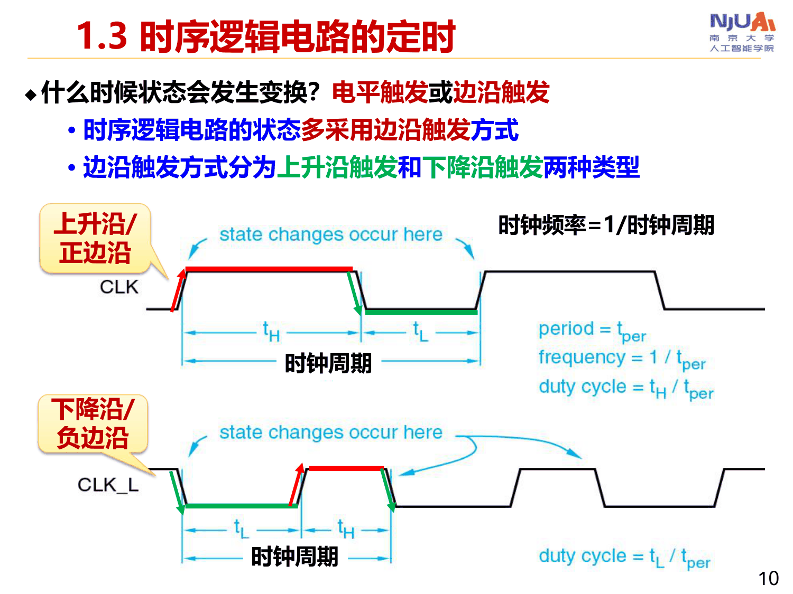
读懂两幅波形图
- 顶部 CLK：标准时钟。红色短线表示上升沿（0→1 的那一瞬），绿色短线是下降沿。"state changes occur here" 指向上升沿 —— 状态切换在那一刻发生。
- 底部 CLK_L：反相时钟，状态切换发生在下降沿。tL（低电平时间）与 tH（高电平时间）位置和上图相反，占空比 = tL/tper。
关键结论
- 时序电路的状态切换多数采用边沿触发。
- 边沿分上升沿和下降沿两种；同一电路里通常统一用一种（混用会让分析变复杂）。
- 同一个时钟周期内只能切换一次。这就保证了：在两个边沿之间，组合逻辑 F 有完整一个周期的时间去算次态，电路稳定后下一沿一到就锁存。
第一讲到这里收尾
你应该带着这几句话进入第二讲：
- 时序逻辑 = 组合逻辑 + 状态记忆 + 时钟。
- 状态机（FSM）是描述工具；触发器是实现工具；时钟边沿是时刻控制。
- 结构上分 Mealy / Moore，切换方式上分同步 / 异步。本课程主线 = 同步 + 边沿触发。
承上启下：再看一眼时序电路结构
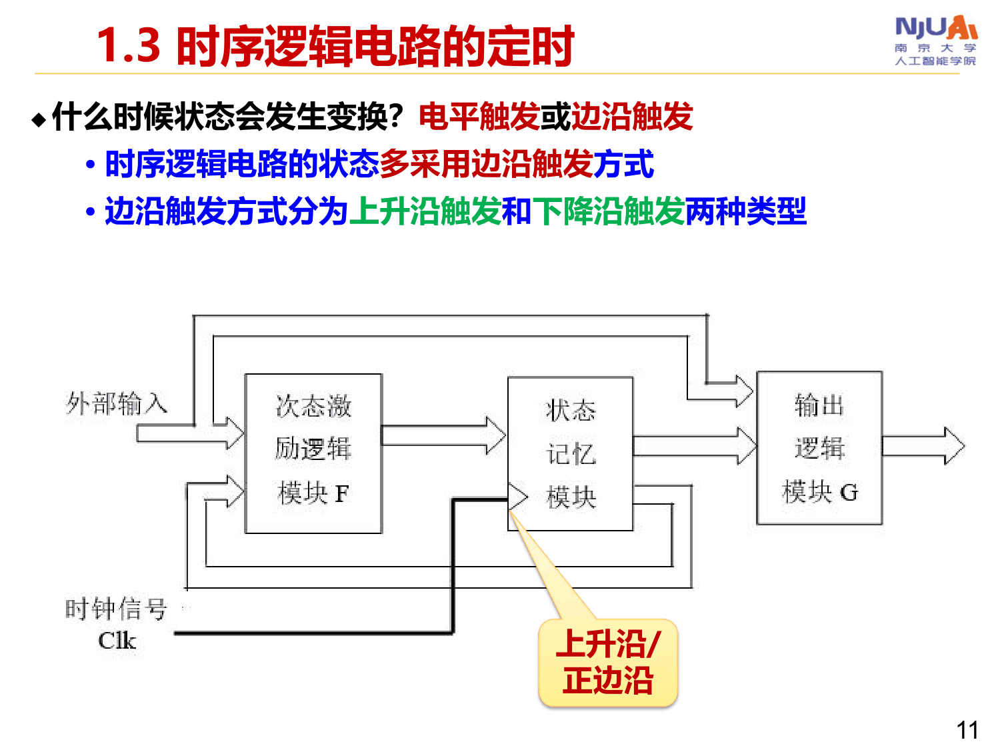
这页和上一讲的 p10 内容重复，但放在第二讲开头有用意
结构图里高亮的"状态记忆模块" + 时钟接入位置标注的"上升沿/正边沿"——这两个就是第二讲要打开的黑盒：
- "状态记忆模块"里面到底装的是什么元件？ → 锁存器 / 触发器。
- "上升沿触发"在硬件上是如何做到的？ → 主从结构。
本讲会从最简单的"两个反相器卡住一个值"开始，逐步搭出工程上真正用的 D 触发器，再扩展到 JK、T。
双稳态原理 — 为什么"反馈环路"能记住一个值
从"组合电路不能记"出发
组合电路是个 DAG（有向无环图），信号从输入流向输出，水流不回头，自然不会"留下点什么"。要让电路"记住"，必须有反馈环 —— 让输出绕回来当输入。
最简单的反馈环：两个反相器首尾相接
设第一个反相器输入 A，输出 B = ¬A；第二个反相器输入 B，输出 = ¬B = A。把第二个反相器的输出再接回 A —— 整圈走完是 A → ¬A → A，自洽。
两个稳态
- 状态 1：A=0, B=1 —— 自洽，永远卡在这里。
- 状态 0：A=1, B=0 —— 也自洽。
没有第三个状态（中间值很快会被反相器放大到 0 或 1 中的一个），所以叫"双稳态"。这两个稳态之一就用来表示存储的 0 或 1。
软件类比
x = False
while True:
x = not (not x) # x 永远不变
反馈环就是把这个循环硬件化。区别是软件需要主动赋值才能改 x；硬件这边要"改值"就得加额外输入端（激励信号），强行打破自洽 —— 这正是后面 SR/D 要做的事。
第二讲封面
列出本讲要造的五种元件：双稳态原型 → SR 锁存器 → D 锁存器 → D 触发器 → T 触发器。注意演化关系：每一个都是为了修补前一个的缺陷而设计的，按顺序学最不绕。
2.1 双稳态元件 — 两个反相器的电路实现
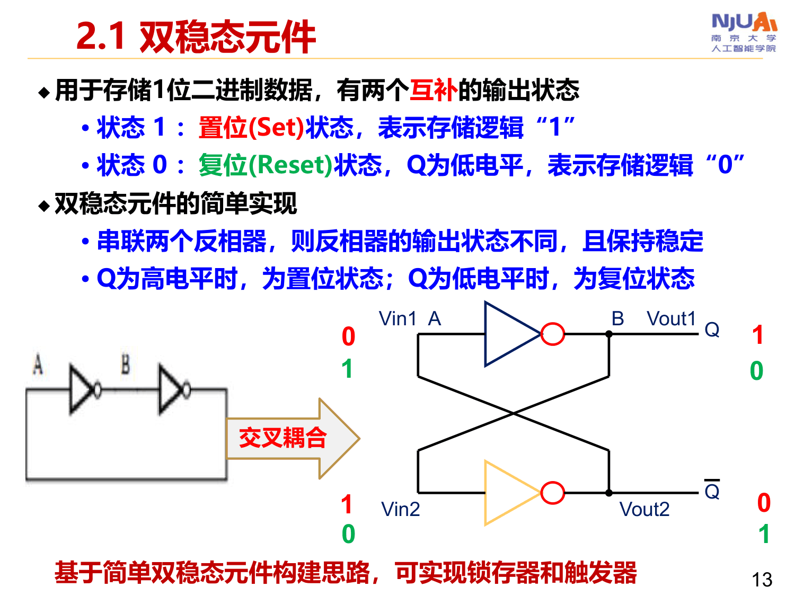
左图：串联 → 右图：交叉耦合
左边是教学起点：两个反相器串联成环（A→B→A）。右边把它"摊开"画成交叉耦合对（两个反相器你给我我给你），输出端命名为 Q 和 Q̄ ——互补。互补是双稳态元件最重要的外特征。
稳态 1（Q=1, Q̄=0）：上面反相器输入 0 → 输出 1（这就是 Q=1）；这个 1 喂给下面反相器，下面输出 0 → 也就是 Q̄=0；这个 0 又喂回上面 —— 与假设一致，自洽，一直卡住。
稳态 0（Q=0, Q̄=1）：同理对称。
状态 1 与 0 之间怎么切换？ —— 自己切不了。这就是裸双稳态的功能局限，下一页（p14）会引出"激励信号"来打破自洽。
两个状态的命名
| 状态 | Q 电平 | 含义 |
|---|---|---|
| 1 | 高 | 置位 (Set)，存"1" |
| 0 | 低 | 复位 (Reset)，存"0" |
激励信号 + 锁存器 vs 触发器
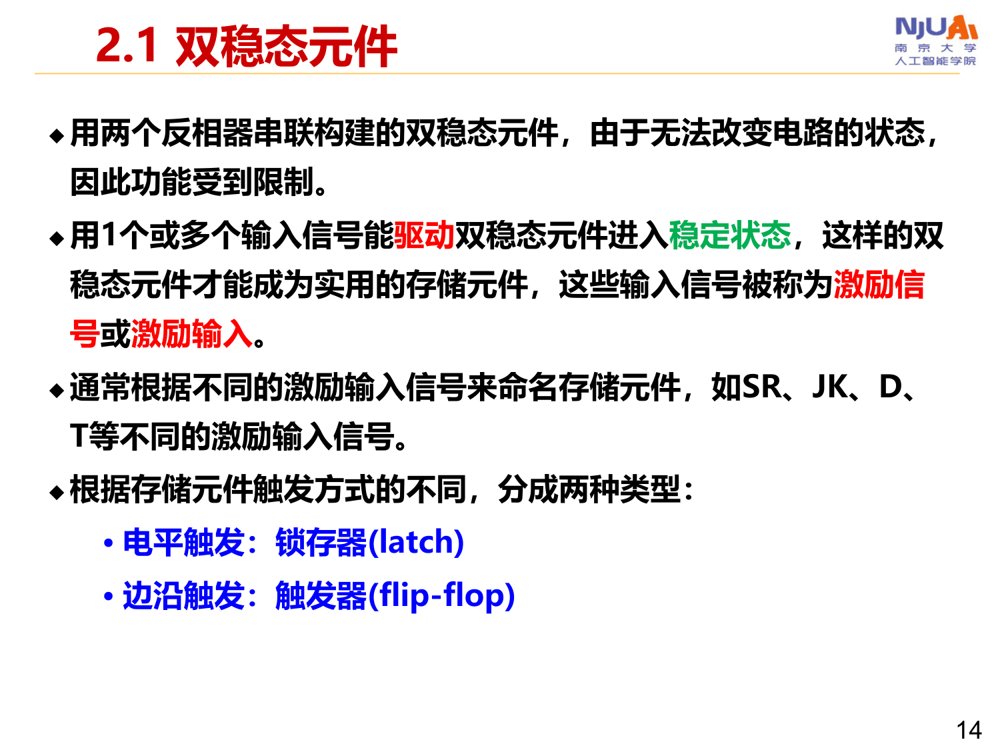
关键概念：激励信号 (excitation input)
裸双稳态元件没法被外部"改写" —— 加电时不知道停在 0 还是 1，且永远不变。要让它实用，必须开一两个"接口"，让外界能强行把它推到指定稳态。这些接口就叫激励信号。
不同激励 → 不同元件
| 命名 | 激励信号 |
|---|---|
| SR | Set, Reset 两根线 |
| D | Data 一根线（互补自动生成） |
| JK | J, K 两根（修复 SR 的禁止态） |
| T | Toggle 一根（每拍翻转） |
另一个分类维度：什么时候允许写入？
| 锁存器 latch | 触发器 flip-flop | |
|---|---|---|
| 触发方式 | 电平触发 | 边沿触发 |
| 响应 | 使能高电平期间一直透传 | 仅在时钟边沿瞬间采样 |
锁存器 vs 触发器 — 全章最容易混的一对名词
一张图记住两者的区别
使能高 使能低 ↑沿 其他时刻 锁存器 ： 透明 锁住 —— —— 触发器 ： —— —— 采样 锁住
用门的比喻
- 锁存器 (latch) = 旋转栅门，抬起的时候任何人都能穿过去（输入 D 一变，Q 就变）；放下的时候关死。
- 触发器 (flip-flop) = 地铁闸机，平时关闭，仅在你刷卡那一瞬放一个人过去，刷完立刻关闭。这"一瞬"就是时钟边沿。
为什么硬件普遍用触发器
设想一个反馈电路：触发器 Q 输出经过组合逻辑算出新值 D'，又接回触发器输入。如果是锁存器（使能期间透明），新值 D' 立刻又传回去成为输入，再变 D'' …… 一个时钟周期里电路会一直绕圈，状态不可控。
边沿触发把"采样"压缩到时钟边沿的一瞬，剩下整个周期组合电路慢慢算，下一沿到来再吃下一份。整齐、可分析、能流水。所以 CPU 里的寄存器几乎清一色是边沿触发的 D 触发器。
2.1 双稳态 — SR 锁存器的电平触发波形
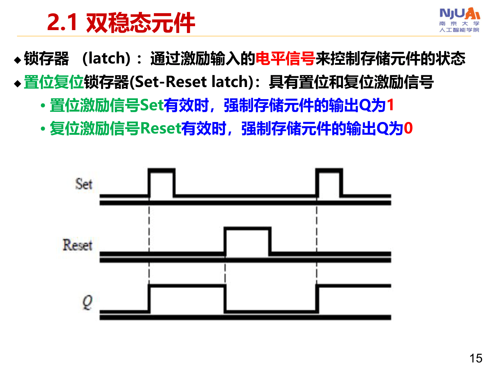
看图三步
- Set 来一个高脉冲 → Q 跟着拉高（置 1）。
- Set 落下后 Q 保持高 —— 双稳态自维持。
- Reset 来一个高脉冲 → Q 拉低（置 0）。
- 再下一次 Set 又拉高，循环。
观察 Q 的变化时刻 —— 是紧跟着 Set/Reset 脉冲的电平到达，不需要时钟。这就是"电平触发"的含义：激励信号一变化，输出立即响应。
所以 SR 锁存器没有时钟端 Clk。它本身就是个"异步"元件。
给 SR 加上时钟 — flip-flop 雏形
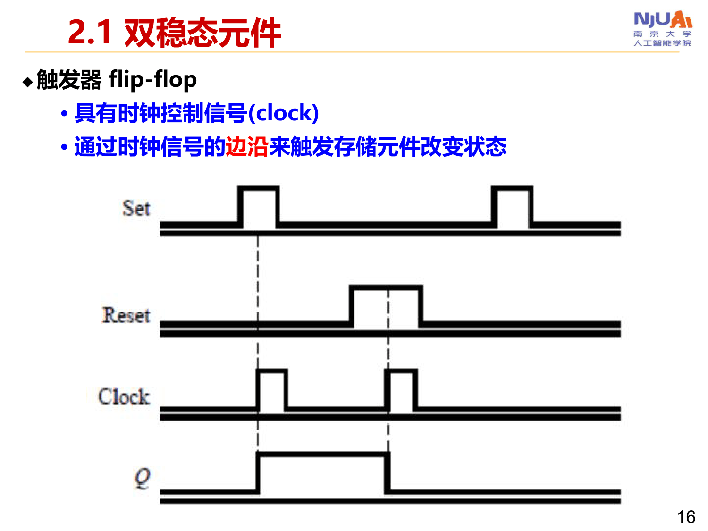
对比上一页
波形多了一条 Clock。Set 即使为高，Q 也不立即响应 —— 必须等到 Clock 的边沿到来时才把 Set/Reset 的当前值"吃进去"。
时刻 1：Set=1，但 Clock 仍是低 → Q 不动。
时刻 2：Clock 上升沿来了 → Q 锁存 Set=1 的状态 → Q 变高。
时刻 3：Reset=1 出现，Clock 还没动 → Q 仍保持。
时刻 4：Clock 又一次边沿 → 此时 Reset=1 被采样 → Q 变低。
2.2 SR 锁存器 — 电路、真值表、符号
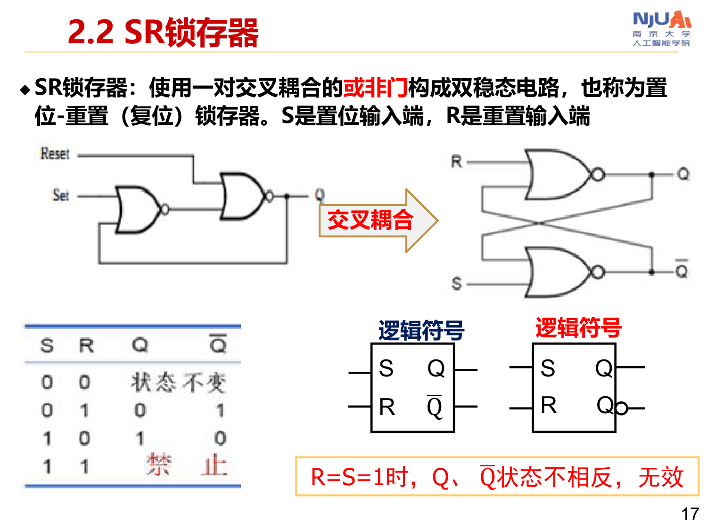
电路结构详解
左图：两个或非门 (NOR) 交叉耦合。一根门的输出连到另一根门的一个输入端。S 接下面那根 NOR 的另一输入，R 接上面那根 NOR 的另一输入。两根 NOR 的输出分别是 Q 和 Q̄。
右图：把同样的电路换种画法（"交叉耦合"形式）。两幅图完全等价。
NOR 真值表小复习
NOR(a,b) = ¬(a ∨ b)，只有两个输入都为 0 时输出才是 1。
情形 ① S=0, R=0（保持）
两个 NOR 各有一个输入是 0，输出由另一个输入（即对方 NOR 的输出）决定。设当前 Q=1, Q̄=0 → 上 NOR: NOR(0, 0)=1=Q̄? 不对。让我重新对应：图中上 NOR 输出 Q，输入 R 和 Q̄。如果 Q=1, Q̄=0，则上 NOR = NOR(R=0, Q̄=0) = 1 = Q ✓。下 NOR = NOR(S=0, Q=1) = 0 = Q̄ ✓。自洽，状态不变。
情形 ② S=1, R=0（置位）
下 NOR = NOR(S=1, Q=任) = 0 → Q̄ 必为 0。上 NOR = NOR(R=0, Q̄=0) = 1 → Q=1。强制 Q=1。
情形 ③ S=0, R=1（复位）
对称：强制 Q=0。
情形 ④ S=1, R=1（禁止！）
两个 NOR 都至少有一个输入是 1 → 两个输出都被强拉为 0 → Q=Q̄=0。违反互补。更糟的是：如果此时 S、R 同时撤回到 0，由于电路对称，最终落到 Q=0 还是 Q=1 取决于哪个门快一点 —— 不可预测。所以这种输入组合是"禁止"的。
逻辑符号
右下角两个方框：S Q/R Q̄ 是标准 SR 符号。带小圆圈的是低电平有效版本（Q̄ 输出端的小圆圈）。
2.2 SR 锁存器 — 状态图、状态表、触发延迟
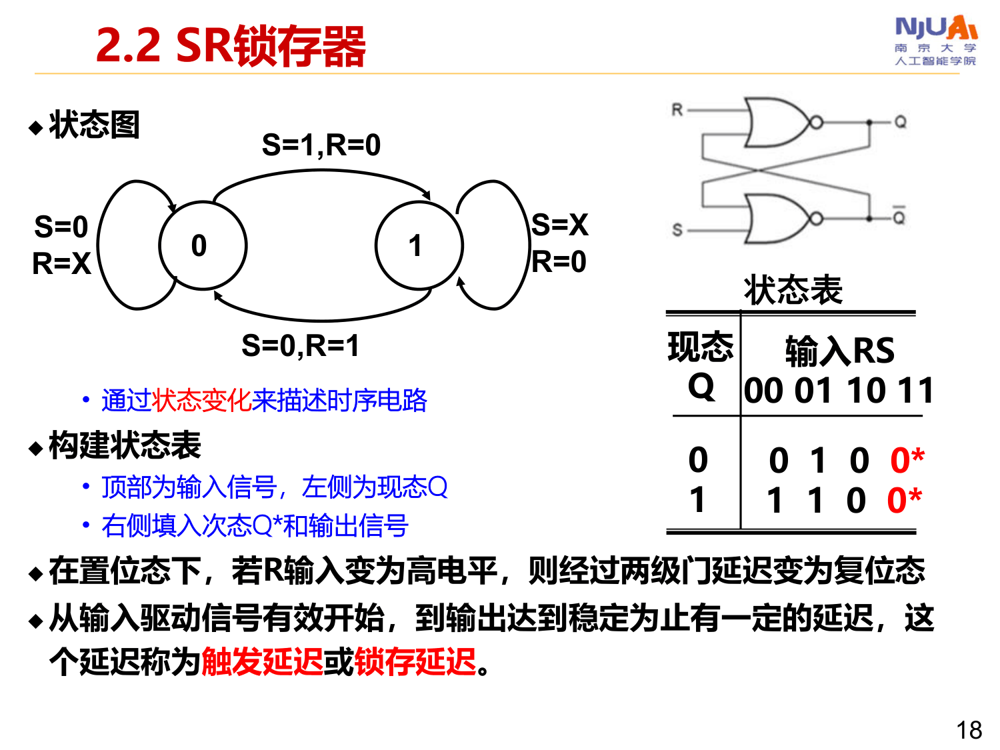
状态图怎么读
两个圆圈分别是状态"0"和状态"1"。圆圈上的自环表示"保持"，箭头上的 S=?, R=? 表示触发该转移的输入条件。X 是 don't care（任意）。
- 状态 0 → 1：需要 S=1, R=0。
- 状态 1 → 0：需要 S=0, R=1。
- 自环（保持）：
S=0, R=X在状态 0；S=X, R=0在状态 1（约束 S·R≠1 隐含）。
状态表怎么读
表中 0* 标红表示禁止态对应的"次态未定义"。这种含义和卡诺图里的无关项 d 类似 —— 化简时可以拿来当任意。
触发延迟（重要工程量）
"在置位态下若 R 输入变高，经过两级门延迟变为复位态" —— 这就是触发延迟（锁存延迟）。物理上一个门有几纳秒延迟，信号在两个 NOR 之间绕一圈需要时间。所以：
t_CQ 或 t_pHL/t_pLH，是第三讲时序分析的核心参数之一。2.2 SR 锁存器 — 特征方程
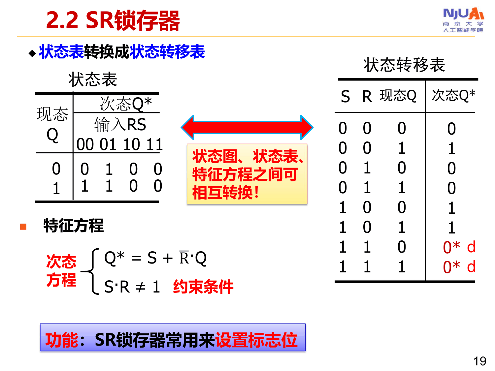
三种表示之间能互转
状态图、状态表、特征方程都在描述同一行为，看哪个方便用哪个：
- 需求阶段：状态图（直观）。
- 编码后推电路：特征方程（代数化简）。
- 调试 / 教学：状态表（一眼穷举）。
怎么推出 Q* = S + R̄·Q
看右边的状态转移表（穷举 S/R/Q 共 8 行）：
- S=1（无论 R 如何，先看 R=0 行）→ 次态恒为 1。所以表达式里出现"
S"项。 - S=0, R=0 → 保持原态 Q。所以再加一个"
R̄·Q"项（R=0 且现态=1）。 - S=0, R=1 → 强制为 0。两项都为 0，正好。
- S=1, R=1 → 禁止，标 0* 当无关项。
合起来：Q* = S + R̄·Q，约束 S·R ≠ 1。这就是 SR 锁存器的特征方程。
典型用途
幻灯片底栏说"SR 锁存器常用来设置标志位"。例如 CPU 内部某个错误标志位：发生错误时由错误检测电路置 S=1 把标志位置 1；软件读完后通过另一路 R=1 清零。这种"两根线分别管置/清"的场景就是 SR 最自然的用武之地。
为什么从 SR 走到 D — SR 的两大缺陷
缺陷 ①：S=R=1 禁止态
用户/电路必须自己保证"绝不同时把 S 和 R 拉高"。万一软硬件接错或竞争冒险出现毛刺，电路就跑飞。这是设计上的潜在地雷。
缺陷 ②：要存一个数据位，需要把 1 拆成 (S=1, R=0)，把 0 拆成 (S=0, R=1)
外面给数据的电路要做"互补"工作，等于多了一层。
解决思路：让 R 永远是 S 的反
把一个输入 D（数据）送进去，自动派生 S = D、R = ¬D。一根反相器就行。这样：
- S 和 R 永远互补 → 永远不会同时为 1 → 禁止态被消除。
- 用户只看到一个输入端 D —— 想存 1 就送 1，想存 0 就送 0，直观。
这就是 D 锁存器（D = Data）的设计动机。p20 就是这个改造的电路图。
再加一个使能端 C
但 D 锁存器还有一个新问题：只要 D 一变，Q 就跟着变。我们希望它"在该写的时候才写"。所以再加一根使能控制线 C：
- C=0：锁存器"关门"，Q 保持。
- C=1：锁存器"开门"，Q 跟着 D 变化（透明）。
这就是 p20 真正画的电路 ——带使能的 D 锁存器，俗称"透明锁存器"。
2.3 D 锁存器 — 电路结构与逻辑
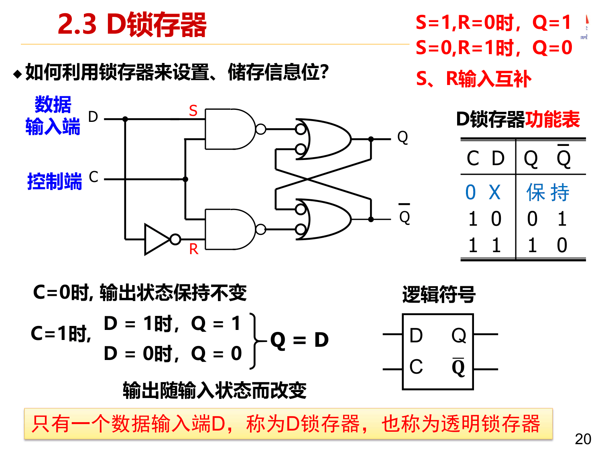
电路图逐部分拆解
从左到右扫一遍图：
- 最左边一根线 D，分两路：一路直接接到上面一个与非门 (NAND) 的输入；另一路经过反相器送到下面一个 NAND 的输入。这就是 BG-S3 说的"D 派生互补对"。
- 使能线 C，分别送到这两个 NAND 的另一输入端 —— C 是共同的看门人。
- 两个 NAND 的输出再去喂后面的交叉耦合 NOR 对（即 SR 锁存器内核），分别充当 S 和 R。
- 最终输出 Q 和 Q̄。
C=0 时（保持）：两个 NAND 不管 D 是什么，输出都被 C=0 强制为 1（NAND 任一输入为 0 → 输出 1）。送给 SR 内核的就是 S=1, R=1 …… 等下，这不是禁止态吗？
关键陷阱：这里送进 SR 内核的实际是低电平有效版本 —— 即 S'=NAND 输出。当上下两个 NAND 输出都为 1 时，真正的 S 和 R 都被认为是 0（因为内核期望低电平有效输入）。所以 SR 在"保持"模式。Q 不变。
简化版理解：C=0 → 切断了 D 到内核的通路 → 内核处于"保持"。
C=1, D=1 时（置位）：上 NAND 两输入都是 1 → 输出 0；下 NAND（输入 ¬D=0, C=1）→ 输出 1。送给内核 (S, R) = (低电平=有效, 高电平=无效) → 强制 Q=1。
C=1, D=0 时（复位）：对称分析，强制 Q=0。
结论：C=1 期间，Q = D（输出"透明"跟随）；C=0 期间，Q 锁住不变。所以又叫透明锁存器 (transparent latch)。
功能表（右上角）
| C | D | Q | 说明 |
|---|---|---|---|
| 0 | X | 保持 | 锁住 |
| 1 | 0 | 0 | 透传 D=0 |
| 1 | 1 | 1 | 透传 D=1 |
2.3 D 锁存器 — 状态图 + 特征方程 + 时序波形
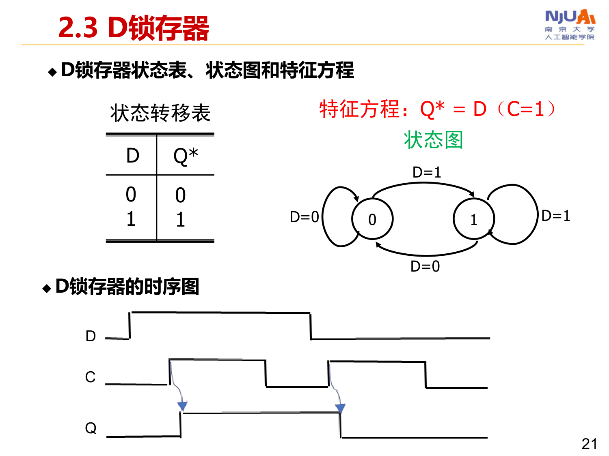
特征方程
简洁。C=0 时方程"不激活"，Q 维持。
时序波形怎么读
D 有一个长方形脉冲（先 1 后 0）。C 在中段拉高一段。
第一个蓝箭头：C 拉高的瞬间，发现 D=1 → Q 立即跟到 1。
C=1 期间 D 保持 1 → Q 也保持 1。
C 下降到 0 → Q 锁住，不再随 D 变化。注意此后即使 D 跌回 0，Q 仍保持 1。
第二段 C 又拉高 → Q 重新跟 D（D=0）→ Q 变 0。
典型"开门-跟随-关门-锁住"模式。
主从结构 — 从"透明"到"边沿触发"的关键发明
D 锁存器的痛点
C=1 期间 D 一抖 Q 就抖。如果 Q 接到下一级电路又算出新的 D'，D' 抖动又喂回来 …… 一个时钟周期内可能跑很多圈。无法用作"每周期变一次"的状态记忆。
解法：两个锁存器串联 + 时钟反相
用两个 D 锁存器："主"锁存器 + "从"锁存器。
D ─→ [主 D-latch] ─QM─→ [从 D-latch] ─→ Q
C=¬CLK C=CLK
两个的使能信号互为反相。
跑一遍 CLK 的一个完整周期
- CLK=0：主 latch 使能高 (C=¬0=1) → 主透明，QM 跟着 D 变。从 latch 使能低 → 从锁住，Q 不变。外界看到 Q 没动。
- CLK 上升沿那一瞬：主从同时切换 —— 主立刻关门（QM 锁住当前 D 值），从立刻开门（开始"吃"QM）。
- CLK=1 整个高电平期间：主关着 → QM 不变；从开着 → Q = QM。但 QM 是固定的，所以 Q 也固定。即使此后 D 上抖，QM 已锁，Q 不受影响。
- CLK 下降沿：从关门，主开门，准备吃下一拍的 D。
对外界的视觉效果
Q 只在 CLK 上升沿那一瞬"采样"了一下 D，之后整个周期都不变。这就是"边沿触发"。从此电路有了清晰的拍子。
2.4 D 触发器 — 主从结构、状态图、特征方程
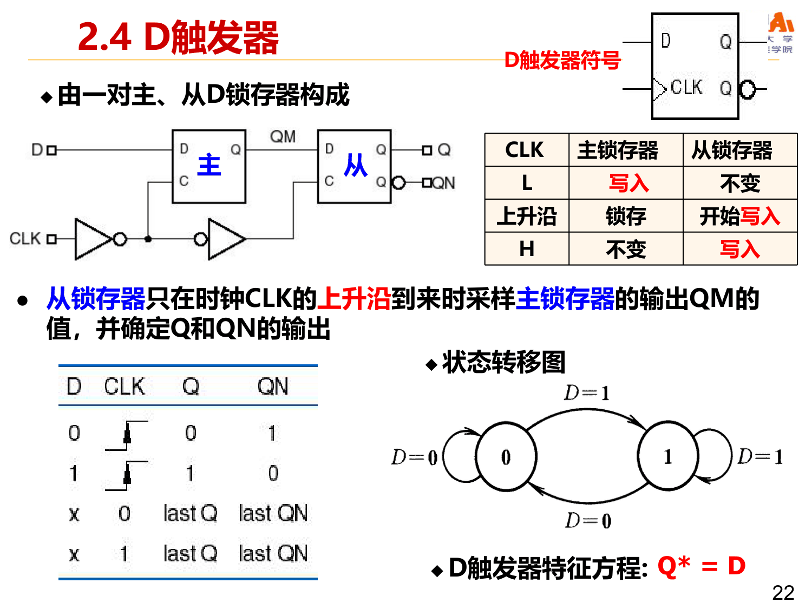
看顶上电路：两个 D 锁存器串联
主锁存器输入 D，输出 QM 接到从锁存器的输入。CLK 经过一个反相器（图中 NOT 门 ⊳○）后接主锁存器的使能 C；CLK 直接接从锁存器的使能 C。所以主从 C 永远反相。
表（CLK 三态）
| CLK | 主锁存器 | 从锁存器 |
|---|---|---|
| 低 (L) | 写入 (C=1 透明) | 不变 (C=0 锁住) |
| ↑ 上升沿 | 锁存 | 开始写入 |
| 高 (H) | 不变 | 写入（但 QM 已固定） |
实际外界看到的效果：Q 只在上升沿瞬间被刷新，其余时间锁住。
特征方程
简洁到极致。整个 CPU 寄存器都是这种行为。
D 触发器符号
右上角符号：D 输入端 + CLK 输入端（带 ⊳ 三角表示边沿敏感）+ Q 和 Q̄ 输出。这是后面所有电路图里你会反复看到的标准件。
状态转移图（右下）
非常简单：D=0 → 次态 0；D=1 → 次态 1。和 D 锁存器形状一样，差别只在"何时采样 D"—— 锁存器是 C=1 期间持续采样，触发器只在边沿采样。
2.4 D 触发器 — 关键时序参数
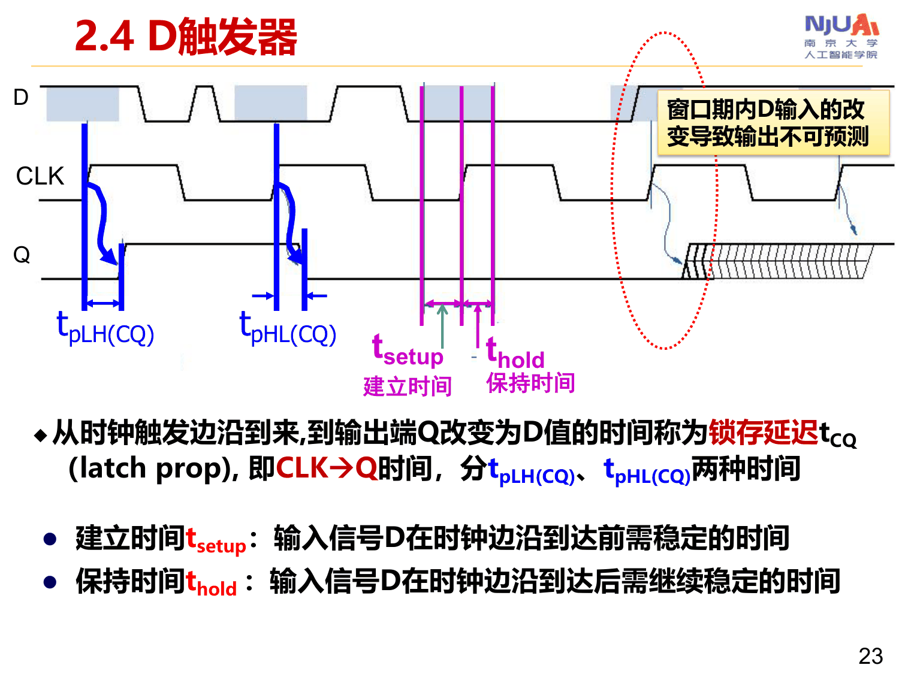
这页四个参数会贯穿后面所有时序分析
| 参数 | 含义 | 方向 |
|---|---|---|
| t_pLH(CQ) | CLK 边沿到 Q 由 0 变 1 的延迟 | 越小越好 |
| t_pHL(CQ) | CLK 边沿到 Q 由 1 变 0 的延迟 | 越小越好 |
| t_setup 建立时间 | D 必须在 CLK 边沿之前稳定这么久 | 越小越好 |
| t_hold 保持时间 | D 必须在 CLK 边沿之后再稳定这么久 | 越小越好 |
波形怎么读
前两个 CLK 边沿处的蓝色弯箭头：从 CLK 抬起到 Q 输出变化，量出的就是 t_pLH 或 t_pHL。
第三个 CLK 边沿前后那对竖紫线：左边的 t_setup 是 D 必须先稳住的窗口；右边的 t_hold 是边沿过后 D 还得继续稳的窗口。这两段加起来形成一个"采样窗口"，窗口里 D 不许动。
最右那个红色虚线椭圆：示意如果 D 在窗口期内变化，触发器进入"亚稳态" —— Q 既不是 0 也不是 1，要过很久才稳定，可能出错。这是工程上要严防的故障。
"窗口"的物理来源
主锁存器在 CLK 上升的瞬间要把当前 D 锁住。锁住这个动作本身需要：① D 提前稳定（让信号传过反相器和 NAND，setup）；② 锁住时刻不能正在变（hold）。否则 NAND 输出可能既不是清晰的 0 也不是清晰的 1。
setup / hold 直觉 — 地铁刷卡比喻
比喻
把时钟边沿想象成你刷地铁卡那一瞬。卡里的数据 = D，闸机记住的数 = Q。
- setup（建立时间）：你手得提前一会把卡按稳在感应区，让卡片信号"建立"。如果你刷得太晚（手刚到感应区刚好卡触到的同时门关），机器读不准。
- hold（保持时间）：刷完那一瞬你也不能马上抽手，得再按住一会让机器把数据"消化"完。如果你刷完立刻抽手，机器可能读到一半数据。
违反的代价
真实电路里违反 setup 或 hold 会导致亚稳态 (metastability)：Q 卡在 0.5V 既不是 0 也不是 1，经过随机时间后才稳定。这种状态对后续电路是"病毒"，会传染。所以芯片设计师会拿数据手册的 t_setup / t_hold 当硬约束。
数字
典型现代工艺：t_setup ≈ 0.1–0.5 ns，t_hold ≈ 0–0.3 ns，t_CQ ≈ 0.2–1 ns。1 GHz CPU 一个周期 1 ns 全部要塞进 t_CQ + 组合逻辑 + t_setup 之和。这也解释了为什么 CPU 频率上不去 —— 一个周期太短就装不下这串延迟。
前情回顾
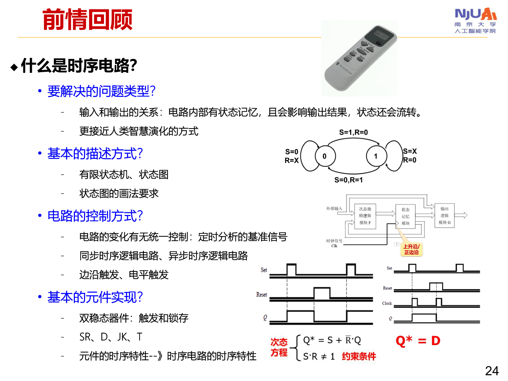
课件中插入的小结页，把第一讲 + 第二讲已学的内容浓缩成一页 mindmap：要解决的问题 / 描述方式 / 控制方式 / 元件实现。读懂这页就说明前面 23 页学到位了。这里不重复展开。
2.4 D 触发器 — 带使能端 EN
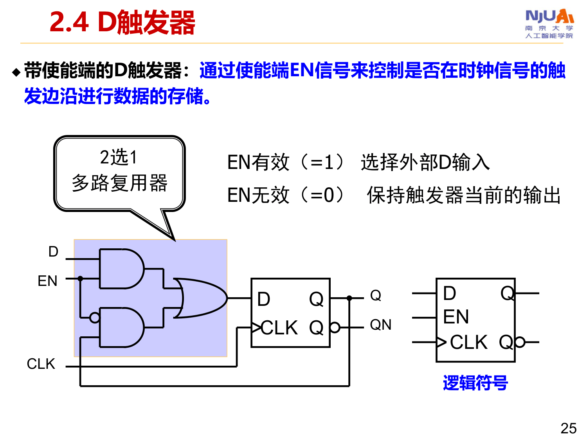
动机
纯 D 触发器每个 CLK 上升沿都强制采样一次 D，不写就保持的功能其实不简单：得让 D 端=当前 Q（自反馈）。每个寄存器都这么接太冗。所以工程上加一个使能端 EN：
- EN=1：触发器"工作"，正常采样外部 D。
- EN=0：触发器"休眠"，无论 CLK 多少次上升沿，Q 都不变。
电路实现：在 D 前面塞一个 2 选 1 MUX
图中蓝色方框就是 MUX：
- 选 1（EN=1）：选外部 D。
- 选 0（EN=0）：选触发器自身的 Q 当作"D"。下一个 CLK 上升沿采样的还是 Q，等于 Q 不变。
EN=1 路径：D → MUX 上路 (AND 门，D 与 EN=1 都开)→ OR 门 → 触发器 D 端 → 上升沿采样 → Q=D。
EN=0 路径：MUX 上路关 (AND 输出 0)，下路开 (Q 与 EN̄=1 都开)→ OR 输出 = Q → 触发器 D 端=Q → 上升沿采样 → Q=Q（不变）。
用途预告
CPU 的寄存器写使能 WE 就是这个 EN。"R3 ← R1 + R2"这条指令只让 R3 的写使能拉高，其他寄存器 EN=0 → 它们的值在这一拍中纹丝不动。第四讲 4.2 节会展开。
2.4 D 触发器 — 带预置 PR 和清零 CLR 的版本
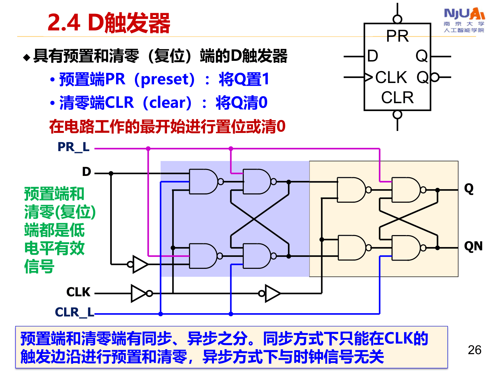
为什么需要 PR / CLR
电路加电瞬间触发器的初值是随机的（可能是 0 也可能是 1）。系统启动要从已知初态出发，所以需要"强行复位"的能力，最好不依赖时钟（异步复位）。这就是 CLR（Clear）。对称地，有时也希望能强行置 1，这就是 PR（Preset）。
电路怎么实现
看复杂的下图，相比 p20 的 D 锁存器多了两根紫色线：PR_L 和 CLR_L（_L 表示低电平有效）。它们分别接在主从两个锁存器的两对交叉门上，越过时钟使能直接强行把 Q 置 1 或置 0。
同步 vs 异步
| 类型 | 响应时机 |
|---|---|
| 异步 PR/CLR | 激励一有效立刻动，不等 CLK |
| 同步 PR/CLR | 激励有效后，下一个 CLK 边沿才动 |
异步复位用于"开机一键归零"。同步复位用于运行中"按规则归零"，能保持时钟同步分析的简洁性。两者各有用途。
符号
右上角的方框符号：上方 PR 输入端（旁有小圆圈表低电平有效），下方 CLR 同样。D/CLK 在中间。这种符号你在 datasheet 上会见到。
补：JK 触发器 — 修补 SR 禁止态
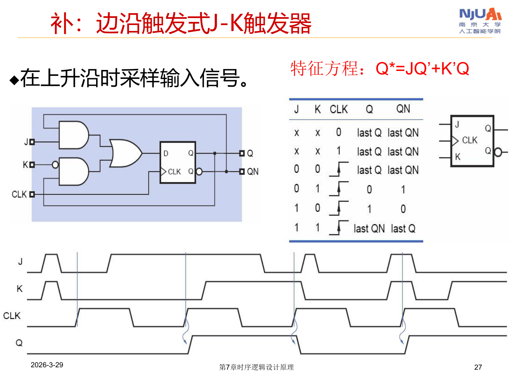
JK 的设计动机
SR 锁存器 S=R=1 时禁止。JK 通过把当前 Q 反馈进激励路径，让 J=K=1 时变成"翻转 (toggle)"，正好填补了那个空格 —— 既没浪费一个输入组合，又消除了"禁止"。
电路（左上）
用 D 触发器实现：
- D = J·Q̄ + K̄·Q（即特征方程 Q* = JQ̄ + K̄Q）
- 两个 AND 门 + 一个 OR 门 + D 触发器。
功能表四种组合
| J | K | Q* | 语义 |
|---|---|---|---|
| 0 | 0 | Q | 保持 |
| 0 | 1 | 0 | 复位 |
| 1 | 0 | 1 | 置位 |
| 1 | 1 | Q̄ | 翻转 |
当 J=K=1，Q=0 时：D = 1·1 + 0·0 = 1 → 下个上升沿 Q 变 1。
下一拍 J=K=1 仍然，Q=1：D = 1·0 + 0·1 = 0 → Q 变回 0。
所以 J=K 持续为 1 时，Q 每个 CLK 周期翻转一次，频率正好是 CLK 的一半。这种行为正是 T 触发器（下一页）和分频器的基础。
2.5 T 触发器 — 每个 CLK 翻转一次
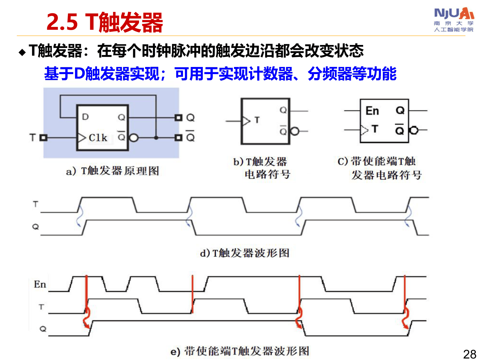
T 触发器是什么
"T = Toggle"。只有一根输入 T：
- T=0：保持。
- T=1：每个 CLK 上升沿翻转一次 Q。
特征方程：Q* = T ⊕ Q（异或）。或者写成 Q* = TQ̄ + T̄Q。
原理图 (a)
用一个 D 触发器实现 —— 把 Q̄ 接回 D。这样每个上升沿 Q 都会变成它自己的反 —— 每拍翻转一次。如果想加 T 控制位，就在 D 输入前加一个 XOR（T⊕Q）或者一个 MUX（T=1 选 Q̄, T=0 选 Q）。
波形 (d)：T 一直保持高 → 每个 CLK 边沿 Q 翻转一次。看输出频率：Q 的周期 = CLK 周期 × 2 → 这就是"二分频"。
波形 (e) 带使能：En 控制 T 是否参与。En=1 期间 Q 翻转，En=0 期间 Q 保持。红色箭头标的是实际发生翻转的边沿。
典型用途（剧透第四讲）
- 分频器：1 个 T 触发器把频率减半。串 4 个就能把 16 GHz 分到 1 GHz。
- 异步行波计数器：每一位用 T 触发器，低位 Q 充当高位的 CLK。p51 会看到这个电路。
- 事件计数：每按一次按钮 → T 翻转一次 → Q 在 0/1 间切换，配合多位形成二进制计数器。
第二讲完结
到这里你已经掌握了"怎么在硬件里造一个能记 1 位状态的元件"。下一讲（第三讲）会把这些元件按照一套设计流程组装成完整的同步时序电路。
第三讲 同步时序逻辑设计 · 封面
第三讲的四个小节：① 设计步骤总览 ② 状态图/表 ③ 化简和编码 ④ 电路设计与分析。本讲是方法论篇，从一句话需求一路推到完整电路加定时分析。我会用同一道"101 序列检测器"贯穿全讲，建议你跟着复现一遍。
3.1 设计步骤 · 从 F/G 函数视角看清"要造什么"
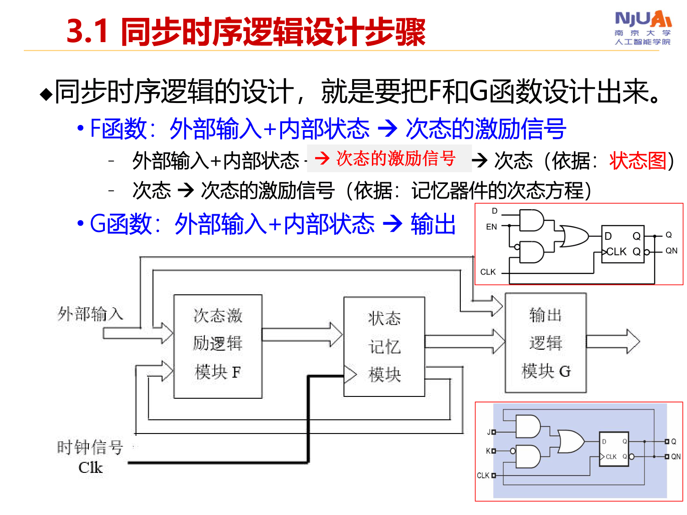
第一讲的结构图再回顾一次
整个同步时序电路就是三块拼图：
- F 函数 (次态激励)：由"外部输入 + 现态"算出"触发器下一拍要写入的值"。它是纯组合电路。
- G 函数 (输出)：由"外部输入 + 现态"（Mealy）或仅"现态"（Moore）算出对外输出。也是纯组合。
- 状态记忆：一组 D（或 JK / T）触发器，受 CLK 边沿控制。
所以"设计同步时序电路"= 把 F 和 G 这两个布尔函数推出来
触发器选好就固定了；时钟由外部供。剩下的全部工作是给 F 和 G 写真值表 → 化简 → 画门电路。从这一刻起，时序电路设计就退化为"组合电路设计 + 一点状态规划"。这正是上学期内容的延伸。
F 函数的两步
幻灯片里有个细节：F 函数被画成两步链：
外部输入 + 现态 ──→ 次态值 ──→ 次态的激励信号
(依据状态图) (依据触发器特征方程)
用 D 触发器时第二步是 trivial 的（D = 次态值），用 JK 触发器时第二步要查激励表。下一讲我们就走一遍。
六步设计流水线 · 全景图
整体路径
① 需求分析 ──→ 一句话需求 → 抽象成"输入/输出/什么时候要响应" ② 状态图/表 ──→ 画状态机 ③ 状态化简 ──→ 合并等价态，状态数减少 → 触发器数也可能减少 ④ 状态编码 ──→ 每个状态分配二进制串 ⑤ 电路设计 ──→ 推 F 和 G 的布尔表达式 → 画门电路 ⑥ 电路分析 ──→ 检查未用状态/自启动；做定时分析
各步要解决的关键问题
| 步骤 | 核心问题 | 本讲页码 |
|---|---|---|
| ① | 电路有几个输入几个输出？什么时候要输出 1？ | p32 |
| ② | 系统"过去"用多少状态能表达？怎么转移？ | p33–p35 |
| ③ | 这些状态里有没有"行为完全一样"可合并的？ | p36–p37 |
| ④ | 编码方案选哪个能让后续布尔函数最简单？ | p38 |
| ⑤ | F 和 G 是什么？画成门电路长啥样？ | p39–p42 |
| ⑥ | 误入未用状态能爬回来吗？这电路能跑多快？ | p43–p48 |
提醒
每一步都不可跳过。化简和编码看起来鸡肋，但能让最终电路从 30 个门减到 10 个门、速度更快。第六步定时分析在 FPGA 实战中是吃饭工具。
3.1 设计步骤 · 流程图
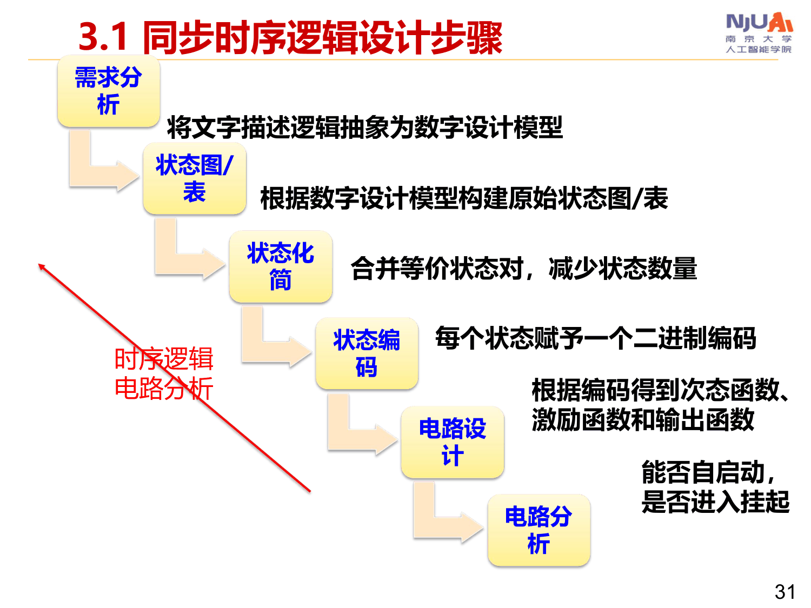
对照背景页里的六步
幻灯片把每步的产出标得很清楚：
- 需求分析 → 数字设计模型：从文字描述抽出"哪些是输入、哪些是输出、要响应什么事件"。
- 状态图/表：画原始（可能冗余的）状态机。
- 状态化简：合并等价对，减少状态数 → 减少触发器数 → 减少电路面积。
- 状态编码：把状态名换成二进制串（编码选哪种非常关键）。
- 电路设计：算次态函数、激励函数、输出函数 → 画门电路。
- 电路分析：自启动判定 + 定时容限计算。
红色斜箭头 "时序逻辑电路分析" 提醒你：第六步本身就是一个完整子题目（拿到一个已成型的电路反推它行为），后面 p43 会重点展开。
3.2 状态图/表设计 · 101 序列检测器 · 需求
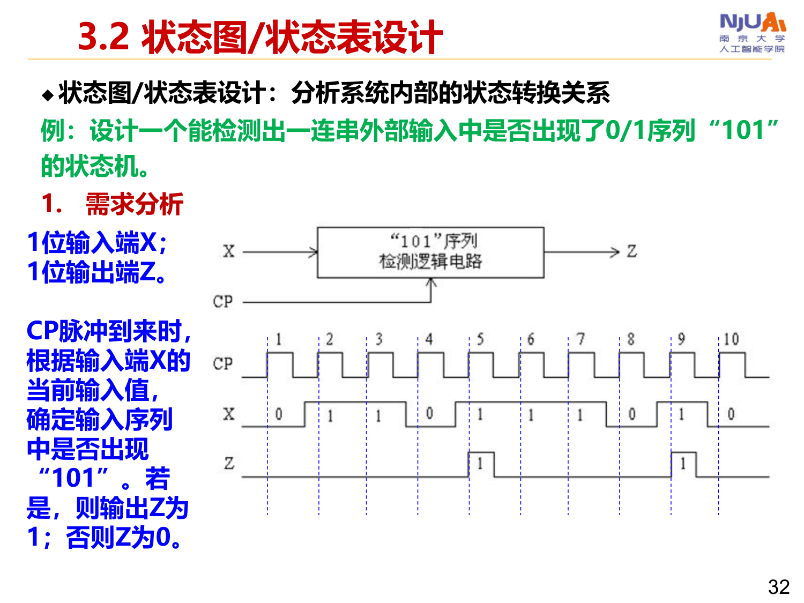
需求分析三件事
- 输入接口：1 位串行输入 X（每个 CP 时钟周期吃一位 0 或 1）。
- 输出接口：1 位输出 Z。
- 什么时候 Z=1：当最近三位恰好构成 "101" 时（重叠也算）。
看波形找证据
幻灯片下方波形：
- 周期 1–10 对应 X 输入序列 0,1,1,0,1,1,1,0,1,0。
- Z 在第 5 周期变 1（因为周期 3–5 看到 1,0,1）。
- Z 在第 9 周期变 1（周期 7–9 X=1,0,1 又是 101）。
用 Mealy 还是 Moore
本例选 Mealy，状态数会少（不需要为"刚刚检测到"单独造一个状态）。下一页直接画 Mealy 状态图。
3.2 构建状态图 · 101 检测器
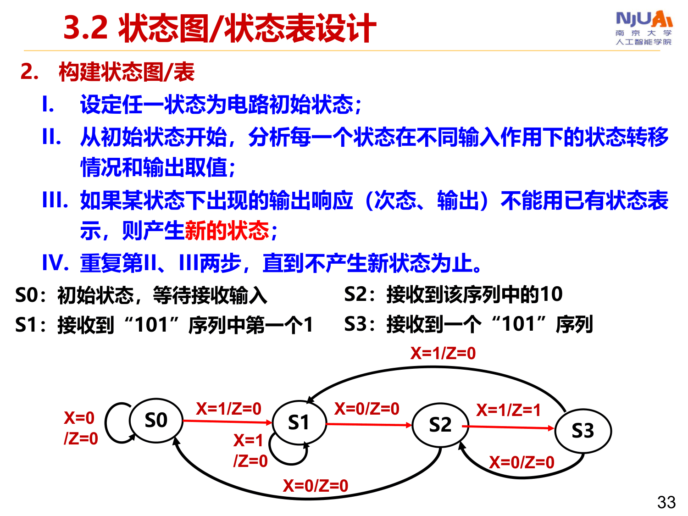
"产生新状态"的递归法
先随便定一个初始状态，然后逐个输入扫描，凡是当前状态遇到某输入"无处可去"就造一个新状态，直到不再产生新状态为止。
四个状态语义
| 状态 | 含义（最近看到的有效前缀） |
|---|---|
| S0 | 初始 / 完全没匹配上 |
| S1 | 看到了 "1"（可能是 101 的开头） |
| S2 | 看到了 "10" |
| S3 | 看到了 "101" ✓ 已经检测到 |
状态图箭头逐条解读（"X/Z" 标注）
S0： X=0 → S0/Z=0（看到 0 还是没起头）；X=1 → S1/Z=0（看到 1，进入"等待 0"状态）。
S1： X=0 → S2/Z=0（看到 "10"，距离成功还差一位 1）；X=1 → S1/Z=0（再来个 1 不算重叠，仍然只记"最新一个 1"）。
S2： X=0 → S0/Z=0（看到 "100"，前缀失效，从头开始）；X=1 → S3/Z=1（看到 "101"！这一刻输出抬高）。
S3： X=0 → S2/Z=0（看到 "1010"，最后两位 "10" 是新前缀，去 S2）；X=1 → S1/Z=0（看到 "1011"，最后一位是 1，回到 S1 等下一个 0）。
"重叠匹配"的处理
S3 收到 X=1 时去 S1 而不是 S0 —— 因为 "1011" 里最后一个 "1" 仍可作为下一次 "101" 的开头。题目若要求不重叠则 S3 任意输入都回 S0。本课程默认重叠匹配。
3.2 由状态图构建状态表
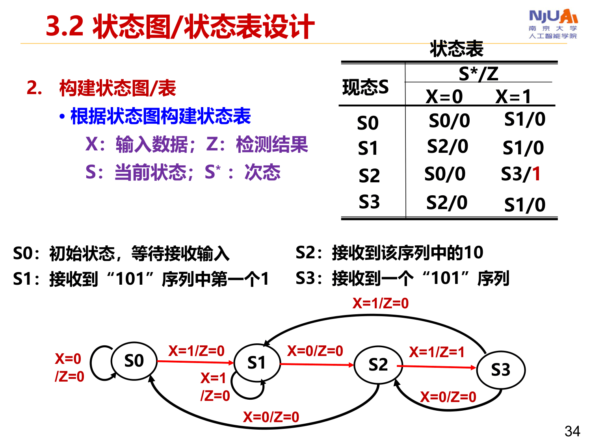
状态表 = 状态图的二维表格化
| 现态 S | S*/Z | |
|---|---|---|
| X=0 | X=1 | |
| S0 | S0/0 | S1/0 |
| S1 | S2/0 | S1/0 |
| S2 | S0/0 | S3/1 |
| S3 | S2/0 | S1/0 |
表里每一格写"次态/输出"。S3 行/X=1 列那个 "S3/1" 是唯一让 Z=1 的格子，对应"刚刚检测到完整 101"。p36 化简时这格的特殊性很关键。
3.2 状态图必须满足的两条约束
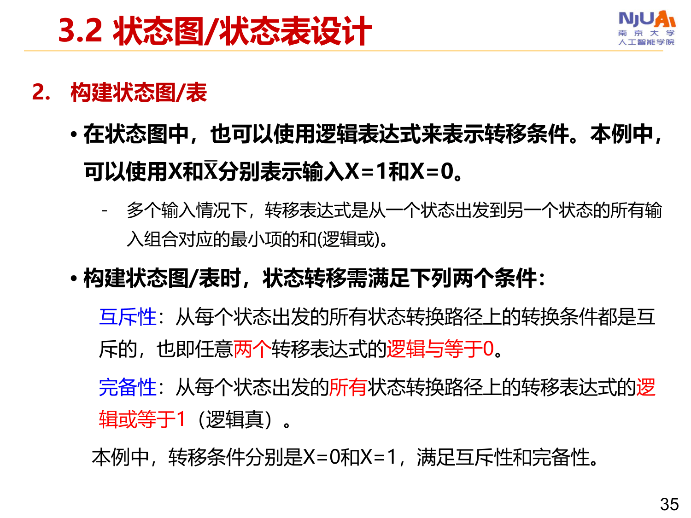
互斥性 (mutually exclusive)
从同一个状态出发的所有转移箭头，转移条件不能重叠。形式化：任意两条转移表达式的逻辑与 = 0。否则给定某输入电路不知道去哪。
完备性 (complete)
从同一个状态出发，所有可能输入都得有去处。从同状态出发所有转移条件的逻辑或 = 1（真）。否则某种输入组合下电路"卡死无去处"。
本例验证
每个状态都只有两条出箭头，分别标 X=0 和 X=1。互斥（X=0 ∧ X=1 = 0 ✓），完备（X=0 ∨ X=1 = 1 ✓）。
等价状态怎么判 — 一句话直觉
定义
两个状态 P 和 Q "等价"⟺ 对任何输入序列，从 P 和从 Q 出发，每一步看到的输出都相同。
一步判等（实操）
- P 和 Q 在所有输入下输出相同；并且
- P 和 Q 在所有输入下的次态对，要么相同，要么是另一对等价状态。
第二条递归。所以通常先假设若干对状态等价，迭代检验。
合并的价值
合并 1 对等价状态 → 状态数减 1 → 可能让触发器数减 1（如果跨过了 2 的幂边界）。本例从 4 状态减到 3 状态，触发器数还是 2 个，但无关项变多 → 布尔函数化简空间更大 → 门电路更小。
本例提前预告
看 p34 状态表，S1 行和 S3 行：
- S1 行：X=0→S2/0, X=1→S1/0
- S3 行：X=0→S2/0, X=1→S1/0
两行一模一样！S1 和 S3 等价 → 可以合并。p36 就做这事。
3.3 状态化简 · 合并 S1 与 S3
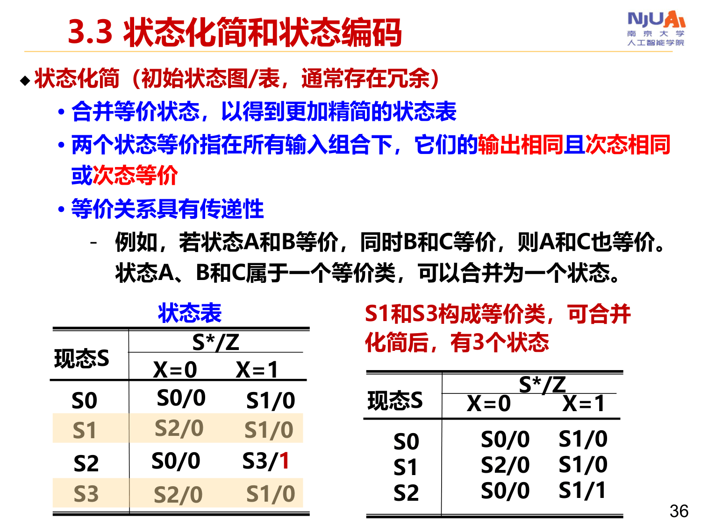
两张表对比
左侧 4 状态表中橙色高亮的 S1 行和 S3 行确实完全一致。合并为一个新状态（仍叫 S1）。合并后右侧 3 状态表 —— S3 在原表中所有指向都改写成指向 S1。
合并后的语义重新解读
| 新状态 | 语义 |
|---|---|
| S0 | 没匹配 |
| S1 | 最近一位是 1（可能是 101 的开头，也可能是 101 检测后剩下的那个 1） |
| S2 | 最近两位是 10 |
原来的"已检测到 S3"不再单独存在 —— 检测成功的"事件"在 Mealy 输出 Z 上即时反映（S2 + X=1 那一格），状态本身则直接迁回 S1。更紧凑、信息没丢。
3.3 等价判定 · 四种典型图模式
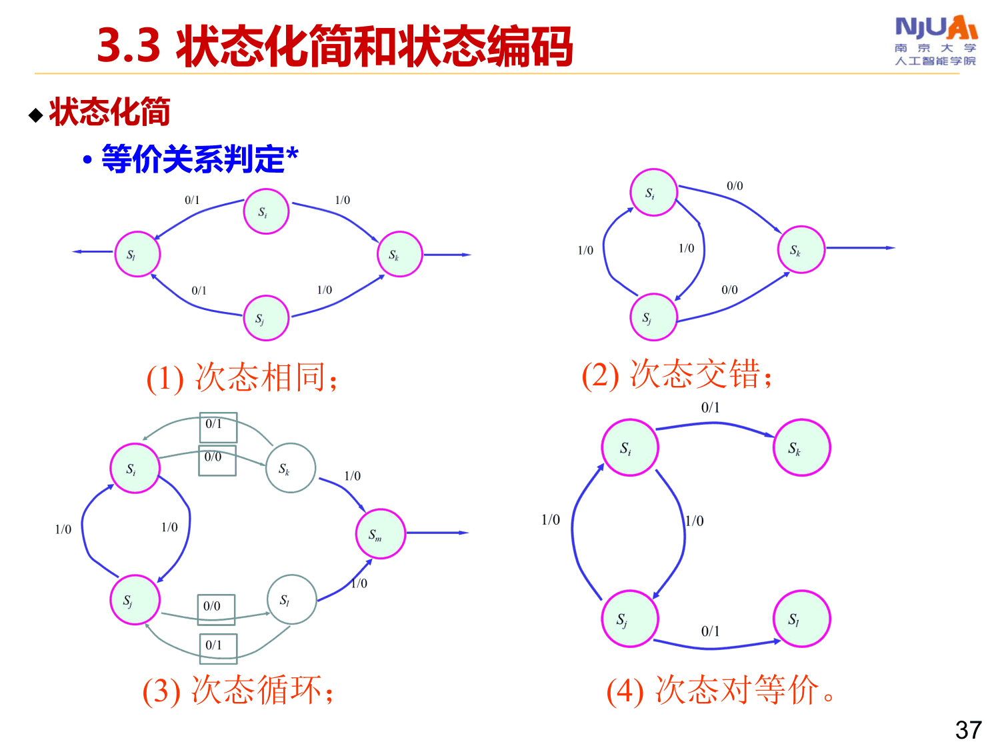
四张小图分别对应四种典型情况
- 次态相同：从 S_i 和 S_j 在所有输入下都去同一个 S_k → 立即判定等价（前提是输出也相同）。
- 次态交错：S_i 和 S_j 互为对方的次态 → 等价（这种情况叫"对偶"）。
- 次态循环：S_i、S_j、S_k、S_l 形成一个环且对应输入下输出相同 → 整环等价。
- 次态对等价：S_i 和 S_j 的次态分别是 (S_k, S_l)，而 (S_k, S_l) 本身也是等价对 → 等价关系递归成立。
3.3 状态编码 · 相邻法三准则
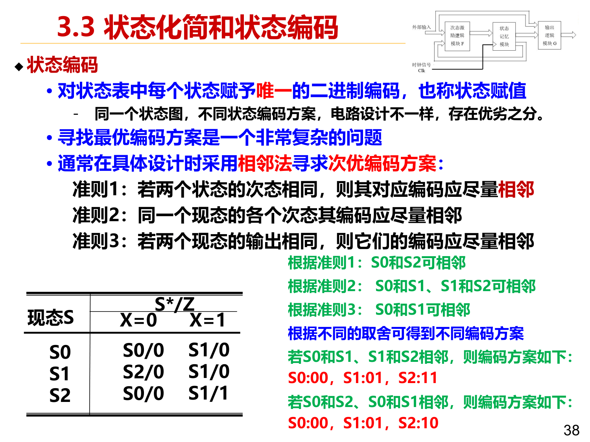
"编码"是什么
3 个状态各分配一个二进制串。2 位就够（4 种组合用 3 个）。不同方案 → 不同布尔函数 → 不同电路面积。找"最优"编码是 NP 难题，工程上用相邻法找次优。
相邻法三准则
| 准则 | 含义 |
|---|---|
| ① 同次态 | 若两状态的次态相同，编码应相邻（仅 1 位不同） |
| ② 同现态各次态 | 同一现态下"X=0 次态"和"X=1 次态"编码应相邻 |
| ③ 同输出 | 输出相同的两个现态，编码应相邻 |
本例可选编码方案
- 方案 A：
S0=00, S1=01, S2=11 - 方案 B：
S0=00, S1=01, S2=10
后续推导用 A 方案，留下 10 作为未用状态 → 这就是 p43 "挂起"分析的来源。
从状态表到布尔表达式 — 卡诺图复习
核心步骤
- 把状态表每行/列展开成三变量真值表（输入 X + 现态两位 Y1Y0）。
- 对每个输出位（Y1*、Y0*、Z）填卡诺图。
- 圈最大组（2、4、8……），写最简积之和。
- 无关项 d 可以圈也可以不圈，怎么让圈更大怎么用。
注意
- 本例的"无关项"来自未用状态 Y1Y0=10。所有"现态=10"的行都填 d。
- X=1 时 S2/Z 输出 1 → 这是唯一非零的 Z 输出格，要圈最小。其它都是 0。
结果预告
p40 直接给最终化简结果。你最好自己画一遍卡诺图，理解为什么 Z = Y1·X 是最简（Y1=1 表示现态 S2，X=1 → 检测到 101）。
3.4 电路设计 · 生成状态转移表
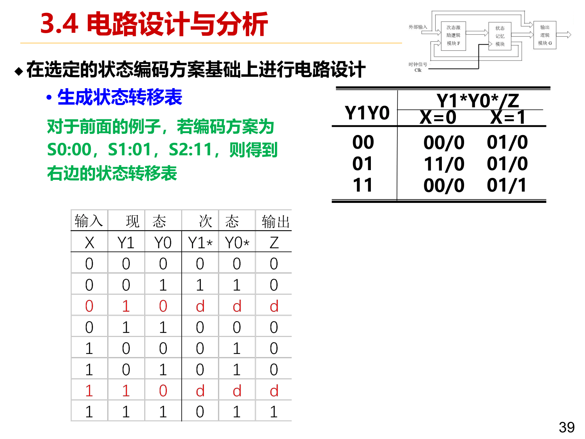
把状态表"翻译"成位级真值表
编码方案 A：S0=00, S1=01, S2=11。现态用 Y1Y0 两位表示，次态用 Y1*Y0* 两位表示。三个输入变量（X, Y1, Y0）→ 共 2³=8 行。Y1Y0=10 不出现在状态机里，标"无关项 d"。
| X | Y1 | Y0 | Y1* | Y0* | Z | 对应 |
|---|---|---|---|---|---|---|
| 0 | 0 | 0 | 0 | 0 | 0 | S0→S0/0 |
| 0 | 0 | 1 | 1 | 1 | 0 | S1→S2/0 |
| 0 | 1 | 0 | d | d | d | 未用 |
| 0 | 1 | 1 | 0 | 0 | 0 | S2→S0/0 |
| 1 | 0 | 0 | 0 | 1 | 0 | S0→S1/0 |
| 1 | 0 | 1 | 0 | 1 | 0 | S1→S1/0 |
| 1 | 1 | 0 | d | d | d | 未用 |
| 1 | 1 | 1 | 0 | 1 | 1 | S2→S1/1 |
3.4 推导次态函数和输出函数
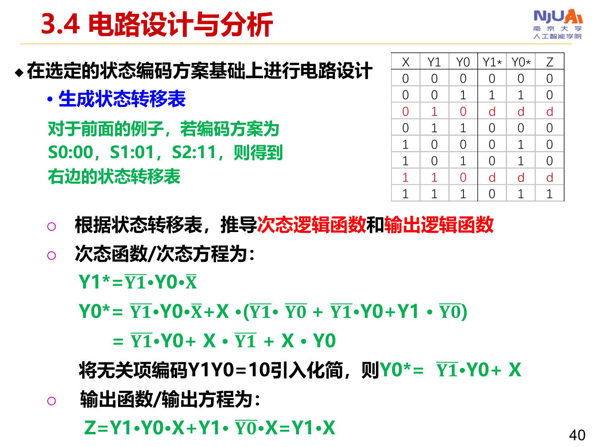
结果一览（已化简）
Y0* = Ȳ1 · Y0 + X
Z = Y1 · X
分别理解
Y1* = Ȳ1·Y0·X̄：Y1 在下一拍变 1 当且仅当现态是 S1（Y1Y0=01）且 X=0。对应：S1 + X=0 → S2（编码 11，Y1=1）。✓
Y0* = Ȳ1·Y0 + X：
- Ȳ1·Y0 项：现态 S1 时 Y0* 总是 1（S1+X=0→S2=11；S1+X=1→S1=01；Y0 都是 1）。
- X 项：只要 X=1，Y0* 总是 1（X=1 下所有次态最低位都是 1）。
把无关项 Y1Y0=10 拿进来化简，能让 Y0* 表达式更简洁。
Z = Y1·X：Y1=1 表示现态是 S2 或未用态。未用态作为无关项参与化简，因此 Z = Y1·X。合法状态下只对应 S2+X=1（检测到 101）。但未用态 10 + X=1 时也会 Z=1 → 误输出！这正是 p44 要修复的问题。
3.4 激励函数 · D 触发器 vs JK 触发器
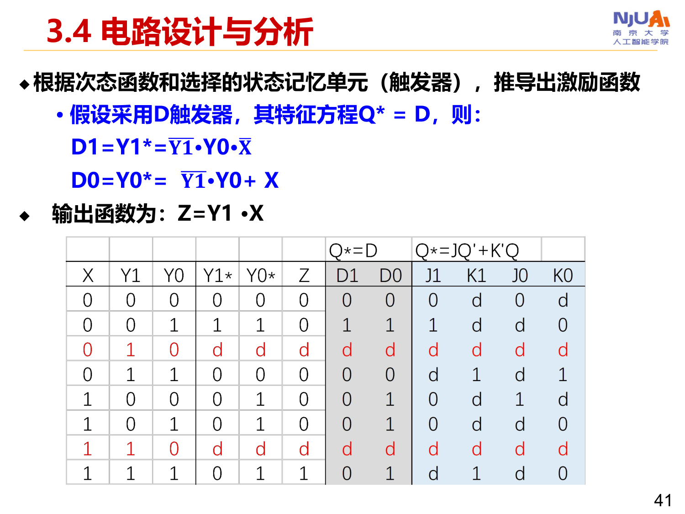
什么是"激励函数"
触发器要让 Q 变成次态值 Q*，必须给它一个合适输入（D 触发器的 D，或 JK 触发器的 J、K）。这个"输入应该是什么"就是激励函数。
D 触发器：trivial
D 触发器特征方程 Q*=D。所以 D1 = Y1*, D0 = Y0*。次态函数 = 激励函数。
D0 = Ȳ1·Y0 + X
JK 触发器：要查激励表
JK 特征方程 Q* = JQ̄ + K̄Q。给定 (Q, Q*) 能反推出最简 (J, K)：
| Q → Q* | J | K |
|---|---|---|
| 0 → 0 | 0 | d |
| 0 → 1 | 1 | d |
| 1 → 0 | d | 1 |
| 1 → 1 | d | 0 |
JK 比 D 多了无关项 → 化简后表达式可能更简，但需要两根线（J 和 K）→ 综合下来工程界普遍偏好 D。
3.4 画最终电路图（D 触发器版）
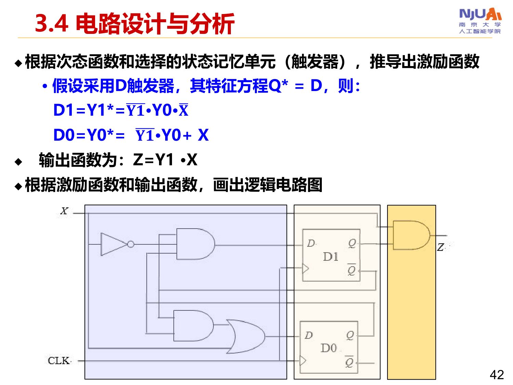
整体结构拆三块
对照蓝色 = 次态激励 F、橙色 = 状态记忆、黄色 = 输出 G：
- F 部分（蓝框）：实现 D1 = Ȳ1·Y0·X̄ 和 D0 = Ȳ1·Y0 + X。需要一个反相器（产生 X̄ 和 Ȳ1）、一个 3 输入 AND、一个 2 输入 AND、一个 2 输入 OR。
- 记忆（橙框）：两个 D 触发器 D1、D0，CLK 共用同一根时钟线（同步设计的核心）。
- G 部分（黄框）：实现 Z = Y1·X。只需要一个 2 输入 AND。
信号流向
X 进入 F 块；Y1 和 Y0 是触发器输出，分两路：一路反馈回 F 块当现态输入；一路送到 G 块算输出。所有触发器共用一根 CLK。这就是同步时序电路的典型样子。
跑一遍完整序列 X = 1, 0, 1（最简单的成功匹配）
假设初始：Y1Y0=00 (S0)，CLK 上升沿前各信号就位。
周期 1（X=1）：F 算出 D1=Ȳ1·Y0·X̄=1·0·0=0；D0=Ȳ1·Y0+X=0+1=1。G 算出 Z=Y1·X=0·1=0。CLK ↑ → Y1Y0 变成 01 (S1)。
周期 2（X=0）：现态 01。D1=1·1·1=1；D0=1·1+0=1。Z=0·0=0。CLK ↑ → Y1Y0 变成 11 (S2)。
周期 3（X=1）：现态 11。D1=0·1·0=0；D0=0·1+1=1。Z=1·1=1 ✓ 检测到 101 输出抬高！CLK ↑ → Y1Y0 变成 01 (S1)，准备好接收下一个 101。
注意 Z 是组合输出，在 CLK 上升沿之前就已经稳定为 1（Mealy 特征）。这一拍 X 拉低或 CLK 过去后，Z 又会迅速变 0。
未用状态 & "挂起"现象 — 加电时的隐患
问题来源
本例编码空间 2²=4，实际状态 3 个，留了一个"10"作为未用。但 D 触发器加电时初始值是随机的（PR/CLR 没有强制复位的话）。万一上电后 Y1Y0=10，电路会发生什么？
两种结局
- 自启动 (self-starting)：未用状态下电路能在几拍内自动跳回合法状态，且过程中没有"假输出"。良性。
- 挂起 (hang)：电路困在未用状态之间循环，永远进不了合法状态。恶性。
解决方案
- 预防：触发器加 CLR 端，加电时强制清零回 S0=00。最常用。
- 分析后修补：算未用状态在当前 F、G 表达式下的去向。能自启动则放心；若挂起或错误输出，调整 F 或 G 表达式（往往是给 G 加几个项消除假输出）。
本例预告
p44 会算：未用状态 Y1Y0=10 在当前公式下 X=0 时下一拍去 00（合法 S0），X=1 时去 01（合法 S1）→下一拍就到合法状态了，能自启动。但 X=1 时 Z = Y1·X = 1·1 = 1，是错误输出 —— 没检测到 101 却抬高 Z。所以要修 G 函数。
3.4 电路分析 · 未用状态与"挂起"现象
主要结论
- 编码 2 位 → 4 种 → 用了 3 种 → 1 个未用 Y1Y0=10。
- "挂起"= 加电后落进未用状态，且互相循环不出来。
- 解决路径之一：让触发器有 PR/CLR，加电时直接强制初态 → 不依赖运气。
- 解决路径之二：分析未用状态行为，若会出错则修改 F 或 G。
"自启动"的形式化定义
从任意一个未用状态出发，经过有限个时钟周期能进入合法工作状态，且过程中不产生错误输出 → 称该电路"具有自启动能力"。
3.4 未用状态分析 · 本例实操
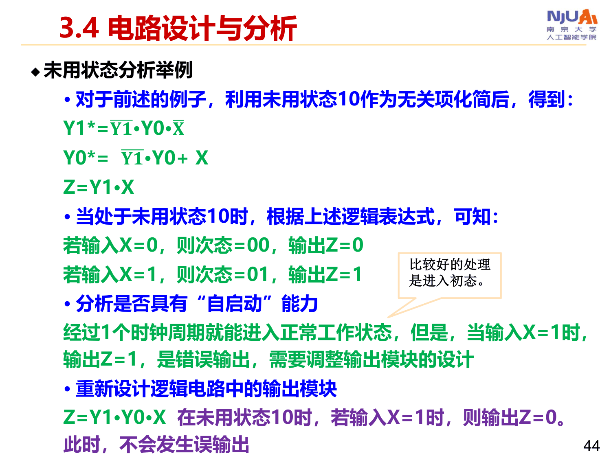
把 Y1Y0=10 代进 F/G 公式
Y0* = Ȳ1·Y0 + X = 0·0 + X = X
Z = Y1·X = 1·X = X
| X | Y1*Y0* (次态) | Z | 评价 |
|---|---|---|---|
| 0 | 00 (S0) | 0 | ✓ 回到 S0，无错 |
| 1 | 01 (S1) | 1 | ✗ 误输出！ 没检测到 101 却抬高 Z |
问题在哪
未用状态下 Y1=1，加上 X=1，刚好满足 Z=Y1·X=1 的条件 → 错报。状态会在下一拍自动跑到合法 S1，所以电路状态层面能自启动，但输出层面有 1 拍假阳性。
修复方法：重新设计 G
原 G = Y1·X 在合法状态下只有 S2 (=11) 命中。我们想让它只在 Y1Y0=11 时命中，未用态 Y1Y0=10 不命中。
多加一个 Y0=1 条件。代入未用态：Z = 1·0·X = 0 ✓ 不再误输出。代入合法 S2 (Y1Y0=11)：Z = 1·1·X = X ✓ 行为不变。
组合延迟链 — 时钟周期的"下界"是怎么来的
一个周期里电路做了什么
- CLK ↑ → 触发器 Y1Y0 输出新值（用时 t_ffpd）。
- 新值进入组合电路 F，算出 Y1*, Y0*（用时 t_comb）。
- Y1*, Y0* 必须在下一个 CLK ↑ 来之前 稳定 t_setup 这么久。
所以一个周期 t_clk 至少要装下：t_ffpd + t_comb + t_setup。否则触发器还没把数据吃稳就来了下一个 CLK，电路出错。
这就是 CPU 频率的上限来源
主频 = 1 / t_clk。要把主频做高，就得：
- 用更快的工艺（缩小晶体管 → t_ffpd、t_comb 减小）；
- 把组合逻辑切成多级流水（每级 t_comb 减小）；
- 用 setup 更小的触发器。
hold 是另一条约束
同一个 CLK 边沿采样后，新值不能太快就传到触发器输入端，否则会破坏当前 CLK 边沿采的"老值"的 hold 窗口。要求：t_ffpd + t_comb > t_hold。这里取最小延迟，因为"最坏情况"是延迟最小（信号最快传过去）。
3.4 电路定时分析 · 四个关键参数
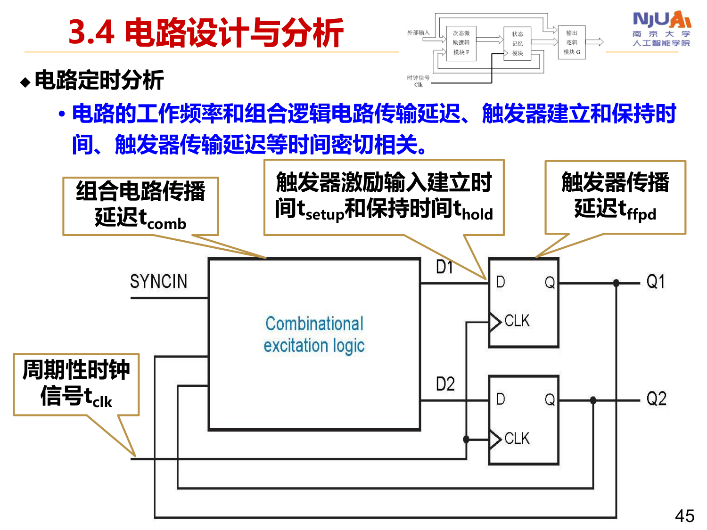
结构图标注的四个时间
| 记号 | 含义 | 来源 |
|---|---|---|
| t_clk | 时钟周期 | 外部供给 |
| t_ffpd | 触发器传播延迟（CLK→Q） | 触发器内部 |
| t_comb | 组合电路（F 模块）的延迟 | 布尔逻辑链 |
| t_setup / t_hold | 触发器输入端要求的稳定窗口 | 触发器内部 |
四个参数在电路里的位置
从一个 D 触发器的输出端 Q1 出发：t_ffpd → 经过组合 → t_comb → 到下一个触发器的 D 输入 → t_setup。这条链就是同步时序电路最长路径。CLK 周期必须不小于它。
3.4 时序波形 · 建立/保持容限
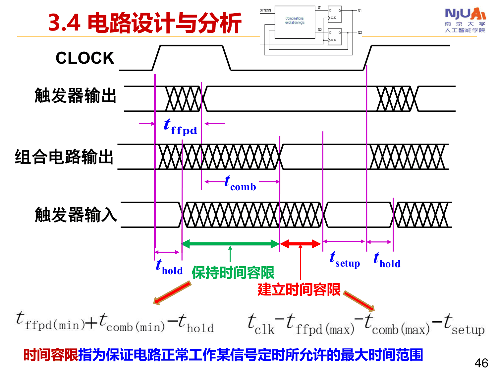
波形分四行
- CLOCK：周期性时钟。
- 触发器输出：每个 CLK 上升沿后经 t_ffpd 变化，然后保持。
- 组合电路输出：触发器输出经过 t_comb 后变化。
- 触发器输入：=组合输出，需要在下一个 CLK ↑ 前 t_setup 稳定，CLK ↑ 后 t_hold 内不变。
两个"容限"
保持时间容限 = t_ffpd(min) + t_comb(min) − t_hold ≥ 0
所谓"容限"= 留出的安全余量。两个都必须 ≥ 0，否则电路无法正常工作。
左侧紫色 t_hold 段：触发器吃完上一拍数据后，新数据不许立刻冲过来。所以"新值传到触发器输入"必须经过至少 t_ffpd(min) + t_comb(min) 时间 —— 这段时间要 ≥ t_hold。
右侧红色 t_setup 段：下一次 CLK ↑ 之前 t_setup 内信号必须稳。所以从上一次 CLK ↑ 算起，最多用掉 t_clk − t_setup 去等数据传播。即 t_ffpd + t_comb ≤ t_clk − t_setup。
3.4 时序约束 · 两条公式总结
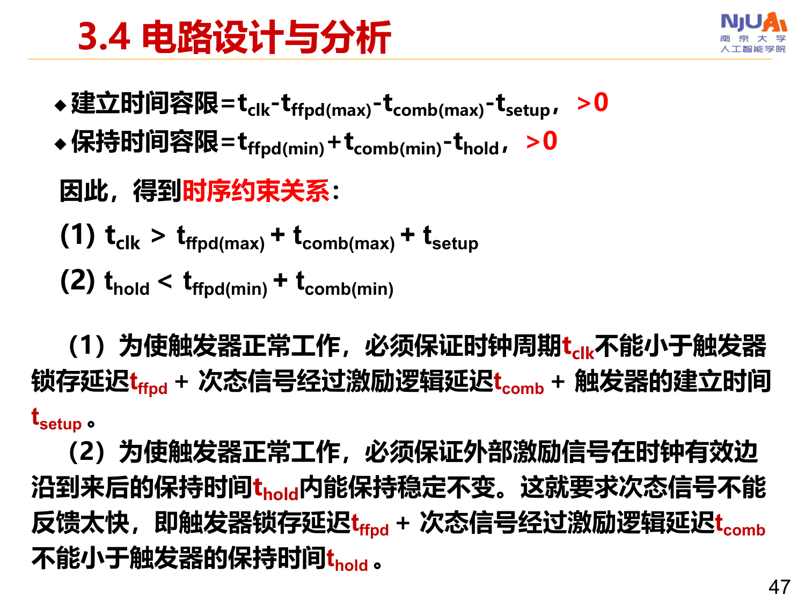
两条硬约束
(2) t_hold < t_ffpd(min) + t_comb(min)
意义
- (1) 时钟下界：决定电路能跑多快。要做高频电路就得让右边变小。这就是"流水线"技术诞生的原因 —— 把长 t_comb 切成多段，每段后面塞一个触发器 → 每段 t_comb 短了 → t_clk 能压更小。
- (2) hold 约束：决定电路能不能正常工作。和频率无关，但如果触发器→组合→下一触发器这条链太短（少于 t_hold），无论时钟多慢都会出错。这就是"短路径问题"。修复方法是在快路径上故意加缓冲门拖慢一点。
3.4 回到 101 检测器 · 实际定时关系
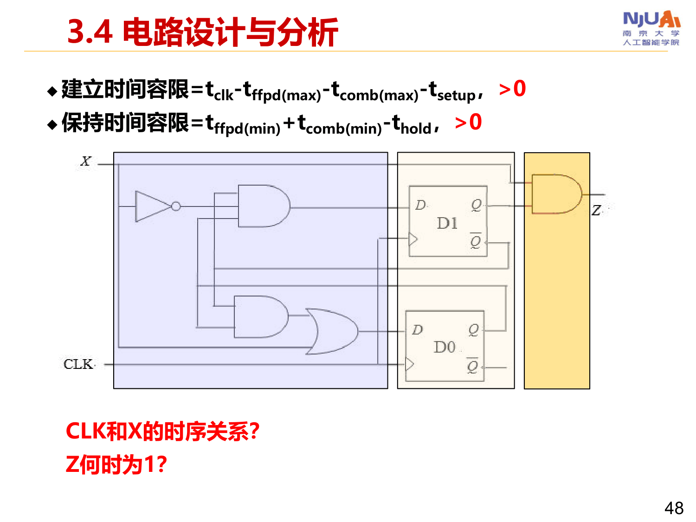
电路图再看一遍
同 p42 的图，分蓝/橙/黄三块。问"CLK 和 X 的时序关系"和"Z 何时为 1"。
X 的输入要求
X 是外部输入。它要求在每个 CLK 上升沿之前 t_setup 稳定，且边沿后 t_hold 内不变 —— 就像 D 触发器对它的 D 端要求那样。但 X 是间接的：X 经过 F 块（组合）后才喂触发器，所以"X 对 CLK 的提前量"还要加上 F 块的传播时间。
CLK ↑ 后 (t_hold − t_comb(min)) 时间不变（若右边 ≤ 0 则无需等）
Z 何时为 1
Z = Y1·Y0·X（修过 G 之后）。当现态 Y1Y0=11（=S2）且 X=1 时 Z=1。
① 上一个 CLK ↑ 之后，触发器输出新 Y1Y0 → 经过 t_ffpd 稳定到 11（如果当时刚好进了 S2）。
② X 此时若为 1，Z = Y1·Y0·X 在经过 G 块的 AND 门延迟（≈一两个门）后变 1。
③ Z 保持 1 直到 X 改变或下一个 CLK ↑ 让状态切到 S1。
所以 Z 是组合输出，不需要等下一个时钟边沿就能反映"刚刚识别成功"，这是 Mealy 输出的特征。
第三讲到此结束
你现在拥有一套完整的"从一句话需求 → 跑起来的同步时序电路"流程。第四讲会把这套流程应用到三类典型部件：计数器、寄存器堆、移位寄存器 —— 全是 CPU 数据通路里立刻就用得上的砖块。
第四讲 典型时序逻辑部件设计 · 封面
第四讲讲三类常见时序部件：① 计数器 ② 寄存器和寄存器堆 ③ 移位寄存器。这一讲偏应用，把前三讲的工具拿来造 CPU 数据通路里立刻就要用到的砖块。下学期数字逻辑设计、再后面计算机组成原理都直接复用这一讲的部件。
计数器是干嘛的 — 它就是 CPU 里 PC 的硬件原型
"计数器"看似简单
每收到一个时钟脉冲，计数值 +1。看起来像 i++，没啥意思。但在 CPU 里它扮演了至少三个关键角色：
- 程序计数器 (PC, Program Counter)：CPU 里专门追踪"下一条指令地址"的寄存器，每执行完一条指令 PC 自动 +4（32 位指令）或 +1（按字节算）。它就是一个能自增的计数器。
- 循环计数：硬件级别的循环（如 DMA 控制器要传输 N 字节，N 由一个计数器递减到 0 才停）。
- 分频器：把高频时钟一分多频出多种慢时钟（用于 USB、串口等不同接口）。
分类维度（p50 会展开）
| 维度 | 选项 | 取舍 |
|---|---|---|
| 时钟方式 | 同步 / 异步 | 同步快、稳；异步省门 |
| 计数方式 | 加 / 减 / 可逆 | 看用途 |
| 编码方式 | 二进制 / BCD / 循环码 | 二进制最常见 |
| 进位方式 | 行波(串行) / 并行 | 并行延迟小但门多 |
本讲会展开三种实例
- p51-52：异步行波加法（最经典教学例，结构最简单）。
- p53-54：同步并行加法（实战常用，速度快）。
- p55：异步行波减法（对称设计）。
看的时候注意对比 —— 同步比异步多了一组 AND 门，但延迟从 n·t_TQ 降到 1 个 AND + t_TQ。这是典型的"用面积换速度"。
4.1 计数器 · 分类总览
核心定义
- "模" = 最大计数值。模十 = 0..9（10 个状态）；模八 = 0..7。
- 从 0 开始计，达到模时输出"计数完成"信号并归零（或饱和、或翻转，根据设计）。
分类四个维度
| 维度 | 取值 |
|---|---|
| 按时钟方式 | 同步（统一 CLK）/ 异步（低位输出当高位 CLK） |
| 按计数方向 | 加 / 减 / 可逆（一根方向控制线） |
| 按编码方式 | 二进制 / BCD / 循环码（Gray 码等） |
| 按进位方式 | 行波（串行）/ 并行（并行进位逻辑） |
为什么 T 触发器是计数器的天生材料
观察二进制计数的最低位
计数 Q3 Q2 Q1 Q0 0: 0 0 0 0 1: 0 0 0 1 2: 0 0 1 0 3: 0 0 1 1 4: 0 1 0 0 ...
看 Q0 这一列：0,1,0,1,0,1,... 每一拍翻转一次。再看 Q1：0,0,1,1,0,0,1,1，每两拍翻转一次。Q2 每四拍翻转一次。Q3 每八拍翻转一次。
规律
第 i 位 Qᵢ"该不该翻转"当且仅当它下面所有位都是 1（要进位上来）。具体地：
- Q0：每拍都翻转。
- Q1：只在 Q0=1 时下一拍翻转（产生进位）。
- Q2：只在 Q1=Q0=1 时下一拍翻转。
- Q_i：只在 Q_{i-1}·Q_{i-2}·…·Q_0 = 1 时下一拍翻转。
T 触发器的角色
T 触发器（第二讲 p28）的语义恰好是：T=1 时下一个 CLK 沿翻转，T=0 时保持。所以把"该不该翻转"的条件直接接到每位的 T 端，就成了计数器。
- 同步并行实现：把 Q_{i-1}·...·Q_0 用 AND 门一次算出，接到 T_i。CLK 共用。所有位同一边沿统一翻转。
- 异步行波实现：偷懒做法 —— 每位 T=1 永远开着，但把 低位的 Q 输出当作高位的 CLK。Q_i 翻转就把 Q_{i+1} 的"时钟"踢一下。结构最简单，但每翻一位需要 1 个 t_TQ 延迟，多位累积。
p51 用异步思路，p53 用同步思路。
4.1 异步行波加法计数器 · 电路 + 波形
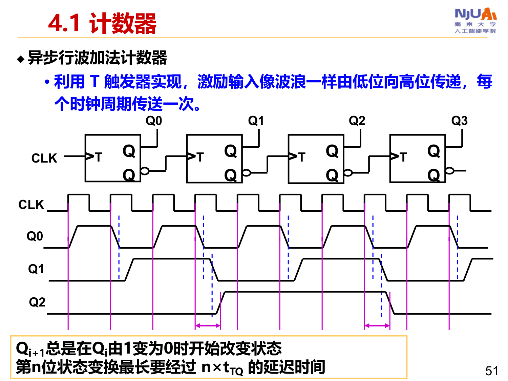
电路结构（顶部）
4 个 T 触发器串联：
- 每个 T 触发器的 T 端始终接 1（永远翻转模式）—— 但要看 CLK 端的边沿。
- 第 0 位 T 触发器的 CLK 接外部 CLK。
- 第 1 位 T 触发器的 CLK 接 Q0（注意：教材这里"Q̄0 也行"，看的是下降沿/上升沿设定，但本图用 Q0 输出当下一位 CLK，要配合下降沿触发器）。
- 依次类推：Q1 当 Q2 的 CLK，Q2 当 Q3 的 CLK。
因此每一级触发器的"时钟"来自下一级低位的输出 —— 低位每翻转一次（具体：1→0 那个边沿）就把高位踢一下。这就是"行波"。
看波形跑一遍（假设初始 Q3Q2Q1Q0 = 0000）
第 1 个 CLK ↑：Q0 (永远翻) → 1→0 不，初始是 0 → Q0 翻到 1。Q1/Q2/Q3 的 CLK 来自下游 Q，没有 1→0 边沿 → 保持 0。结果 = 0001。
第 2 个 CLK ↑：Q0 翻到 0（出现 1→0 边沿，踢 Q1）。Q1 翻到 1。Q2/Q3 不动。结果 = 0010。
第 3 个 CLK ↑：Q0 翻到 1（0→1 边沿，不踢）。Q1 不动。结果 = 0011。
第 4 个 CLK ↑：Q0 翻到 0（踢 Q1）→ Q1 也翻到 0（踢 Q2）→ Q2 翻到 1。结果 = 0100。注意这次连续两次"翻转 + 踢下一级"，整个过程经过了 3 个 t_TQ 才稳定到 0100。
波形图最下面的紫色双向箭头标注的就是这种"多级翻转累积延迟"。
关键结论（页底红框）
- "Q_{i+1} 总是在 Q_i 由 1 变 0 时开始改变状态" —— 这就是行波的本质。
- "第 n 位状态变换最长要经过 n × t_TQ 的延迟" —— 4 位计数器最坏要 4 个 t_TQ。位数多了就吃不消，所以行波计数器很少用于 8 位以上。
4.1 异步行波 · 完整状态转换过程
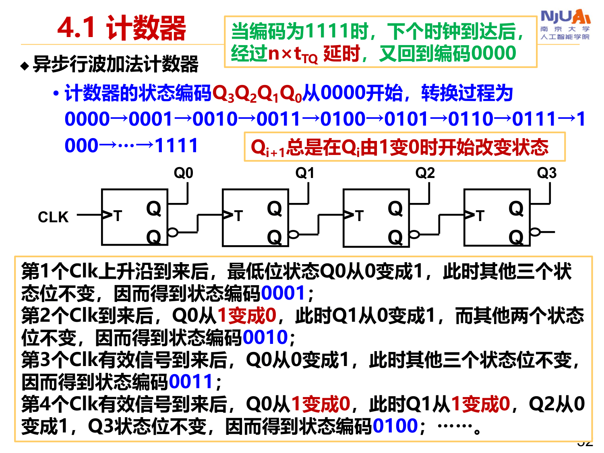
16 个状态轮换
0000 → 0001 → 0010 → 0011 → 0100 → 0101 → 0110 → 0111 → 1000 → 1001 → ... → 1111 → (回到) 0000
每个 CLK 一拍。1111 之后再来一个 CLK，Q0 1→0 踢 Q1，Q1 1→0 踢 Q2，Q2 1→0 踢 Q3，Q3 1→0 输出（这就是"溢出/进位完成"信号，可以拿去做更大计数器的输入）。最终回到 0000。
幻灯片右上角红框警告
"当编码为 1111 时下个时钟到达后，经过 n·t_TQ 延时又回到 0000"。这段延迟期间整个电路的输出是不稳定的。如果某个高频系统抢在延迟期间读取了 Q3Q2Q1Q0，可能读到 1110、1100、1000 等中间状态 —— 全是错的。
详细走第 4 个 CLK 那一刻（0011 → 0100）—— 教材列了 4 行解释
① 第 1 个 CLK：最低位 Q0：0→1（其他位的 CLK 来自下游，0→1 不触发，因此其他位不变）→ 编码 0001。
② 第 2 个 CLK：Q0：1→0，产生下降沿喂给 Q1；Q1：0→1。其他位不变。Q1 的 0→1 不触发 Q2。结果 = 0010。
③ 第 3 个 CLK：Q0：0→1，0→1 不踢 Q1。其他位不变。结果 = 0011。
④ 第 4 个 CLK：Q0：1→0（踢 Q1）→ Q1：1→0（踢 Q2）→ Q2：0→1。Q3 没动。结果 = 0100。这一拍内有 3 级翻转，累计延迟 3·t_TQ。
4.1 同步并行加法计数器 · 电路结构
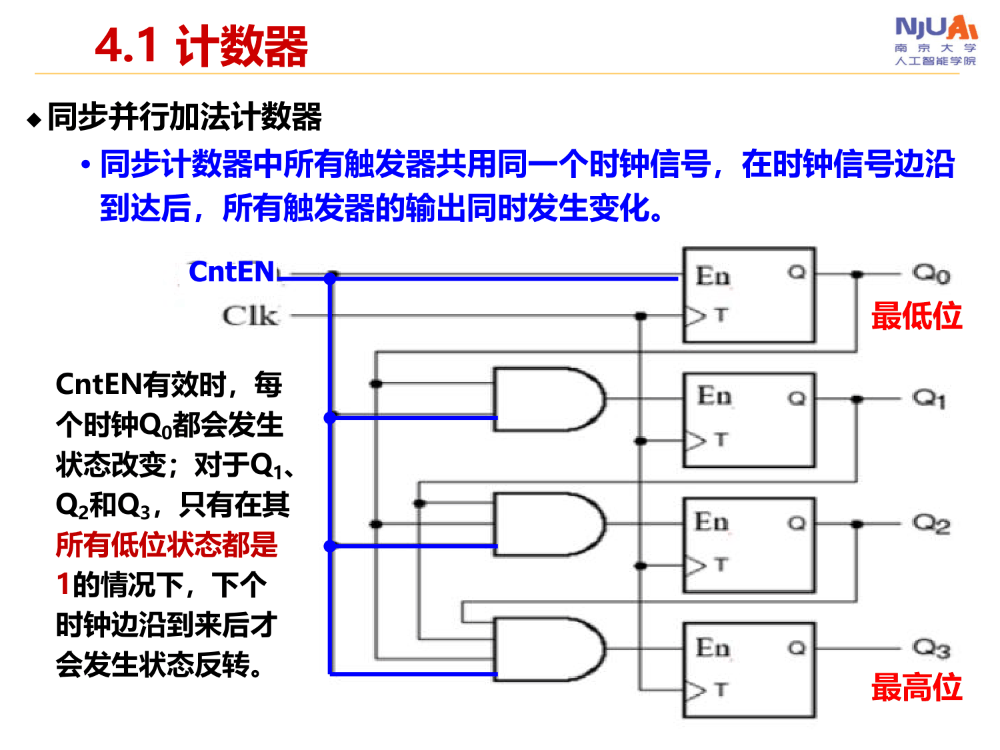
关键差别：所有触发器共用同一根 CLK
这是"同步"的核心。每位的"该不该翻转"不再靠下游 CLK 踢，而是通过 AND 门预先算好，然后让带使能端的 T 触发器在 CLK 边沿到达时决定动或不动。
电路逐位分析
- Q0（最低位）：T 触发器 En 直接接 CntEN（计数使能）。每个 CLK 都翻。
- Q1：En = CntEN · Q0。意思是"使能开着且 Q0=1"时才允许 Q1 翻转。
- Q2：En = CntEN · Q0 · Q1。所有低位都为 1 才翻。
- Q3：En = CntEN · Q0 · Q1 · Q2。
这些 AND 门同时算出所有 En 信号，触发器同步响应 CLK ↑。
跑 0011 → 0100 这一拍（关键，对比 p52 看延迟差异）
CLK ↑ 前一刻 Q3Q2Q1Q0=0011，CntEN=1：
- Q0 的 En = 1 → Q0 准备翻转 (1→0)。
- Q1 的 En = 1·Q0 = 1·1 = 1 → Q1 准备翻转 (1→0)。
- Q2 的 En = 1·Q0·Q1 = 1·1·1 = 1 → Q2 准备翻转 (0→1)。
- Q3 的 En = 1·Q0·Q1·Q2 = 1·1·1·0 = 0 → Q3 不翻。
所有 En 在 CLK ↑ 之前 t_setup 时间就已经算好稳定。CLK ↑ 到来 → 所有触发器同时动：Q3Q2Q1Q0 一拍内整齐切到 0100。
总延迟仅 1 个 AND 门 + 1 个 t_TQ。相比异步 4·t_TQ，速度提升数倍。
4.1 同步并行 · 延迟优势
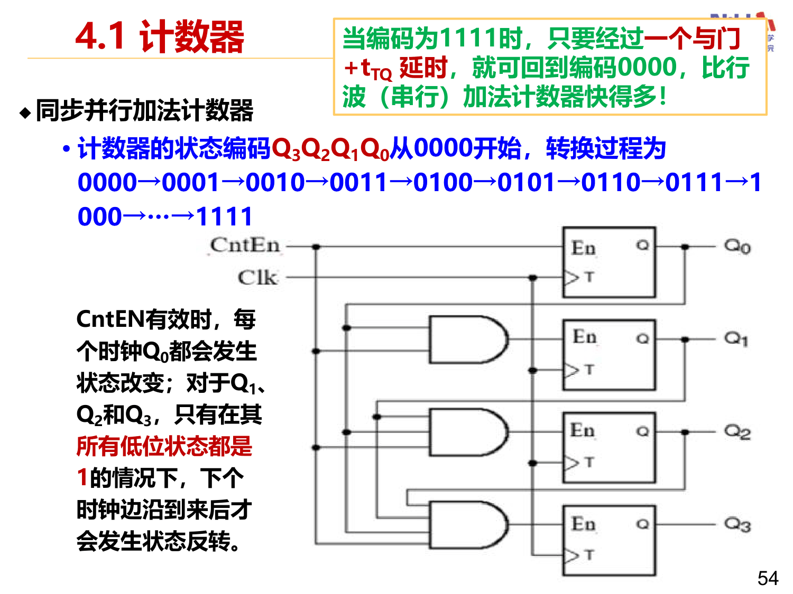
红框结论
"当编码为 1111 时，只要经过一个 AND 门 + t_TQ 延时就可回到 0000，比行波（串行）加法计数器快得多！"
状态转换序列一致
0000 → 0001 → ... → 1111 → 0000，与异步行波完全一样（因为是同一个计数语义）。区别只在切换时刻的物理细节：
| 异步行波 | 同步并行 | |
|---|---|---|
| 所有位的"翻转判断" | 靠下游 CLK 踢，串行触发 | AND 门并行算好 |
| 最坏延迟 | n × t_TQ | ≈ 1 × t_AND + t_TQ |
| 中间毛刺 | 有，输出多瞬变 | 无，所有位同步切换 |
| 电路面积 | 小，无 AND | 多 n-1 个 AND 门 |
| 用途 | 简单分频、教学 | 实际工程主流 |
4.1 二进制异步行波减法计数器
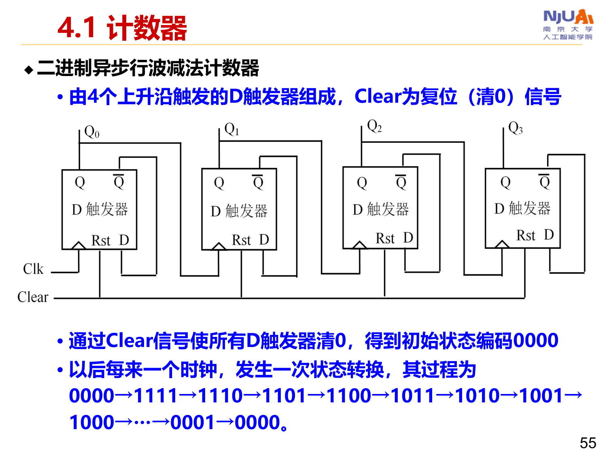
结构改动：用 D 触发器 + Q̄ 反馈
看图：4 个上升沿 D 触发器。每个 D 触发器把自己的 Q̄ 接回 D（这种接法等价于 T=1 的 T 触发器，每拍 Q 翻转）。CLK 链：第 0 位接外部 CLK；第 1 位的 CLK 接 Q̄0（上一位的反相输出）。依此类推。
为什么改"减"
关键差别：高位 CLK 不再接 Q_i 而是接 Q̄_i。这样 Q_i 0→1 时 Q̄_i 1→0（不触发上升沿），Q_i 1→0 时 Q̄_i 0→1（触发上升沿，踢高位翻转）。这正好和加法相反。
初始 Clear → 0000。开始一拍一拍跑（CLK ↑）
第 1 拍：Q0 翻到 1。Q̄0：1→0，不踢 Q1。结果 = 0001。等等，这是加法吧？
嗯不对，让我重新看图：图里 D 触发器的 D 端接 Q̄，所以 Q* = Q̄，即每个 CLK 翻转。但 CLK 链从图上看是 Q0（不是 Q̄0）作为 Q1 的 CLK 端 —— 但触发器是上升沿触发。
所以：Q0 0→1 时，Q1 看到上升沿 → 翻转。这种连接下计数序列其实是：
0000 → 0001(Q0翻) → 0010+0001 同时? ...
看页底教材给的"状态转换序列"：0000 → 1111 → 1110 → 1101 → 1100 → 1011 → ... → 0001 → 0000。
所以教材在第一拍就直接跳到 1111，这是因为初始 0000 接 Clear 后，第一个 CLK 上升沿到来时：
- Q0 翻：0→1。这同时让所有上游 D（=Q̄）翻：Q1 的 CLK 是 Q0 的上升沿 → Q1 也 0→1。Q2 的 CLK 是 Q1 上升沿 → 0→1。Q3 同。
- 所有位都被"传染"翻转 → 0000 → 1111。一步到位。
第 2 拍：Q0 1→0（下降沿，不触发 Q1）。Q1/Q2/Q3 不变。结果 = 1110。
第 3 拍：Q0 0→1（触发 Q1）→ Q1 1→0（下降沿，不触发 Q2）。结果 = 1101。
……依此 1100, 1011, 1010, 1001, 1000, 0111, ... 0001, 0000，正好倒着数。
核心机制：加法用 Q 输出做 CLK 链，减法用 Q̄（即换成下降沿触发）。把图中第二根线从 Q 改 Q̄ 就行，结构几乎一样。
CPU 内的寄存器 — 你将来在 chap6 会反复看到
什么是寄存器
"暂存信息的逻辑部件"——N 位寄存器就是 N 个并联的 D 触发器，共用一根 CLK 和一根 WE（写使能）。一根线进 N 位数据，一根线出 N 位数据。
CPU 里你会遇到的几个常驻寄存器
| 名字 | 位数 | 作用 |
|---|---|---|
| PC (Program Counter) | 32 | 指向下一条要执行的指令地址 |
| IR (Instruction Register) | 32 | 缓存当前正在执行的指令 |
| MAR (Memory Address Register) | 32 | 送到主存总线的地址 |
| MDR (Memory Data Register) | 32 | 和主存交换的数据 |
| FLAG / Status | n | 算出来的零标志、进位标志等 |
| GPRs (寄存器堆) | 32×32 | 通用寄存器组（如 RISC-V 的 x0–x31） |
寄存器 vs 寄存器堆
- 独立寄存器：每个有专门用途（PC、IR 等），单独控制。
- 寄存器堆 (Register File)：一组按编号访问的寄存器，CPU 用三根线选地址（RA、RB 读端口编号；RW 写端口编号）。一条 ALU 指令
add x3, x1, x2就是"从 RF[1] 读、从 RF[2] 读、ALU 算、结果写到 RF[3]"。
p56–p60 主线
先看一张完整 CPU 数据通路图（p56），把寄存器全标出来；再看 N 位寄存器内部（p57）；最后聚焦寄存器堆，把端口（p59）和内部结构（p60）拆开讲。这五页是 chap6 的预热，吃透对后续课程帮助极大。
4.2 寄存器在 CPU 中的位置
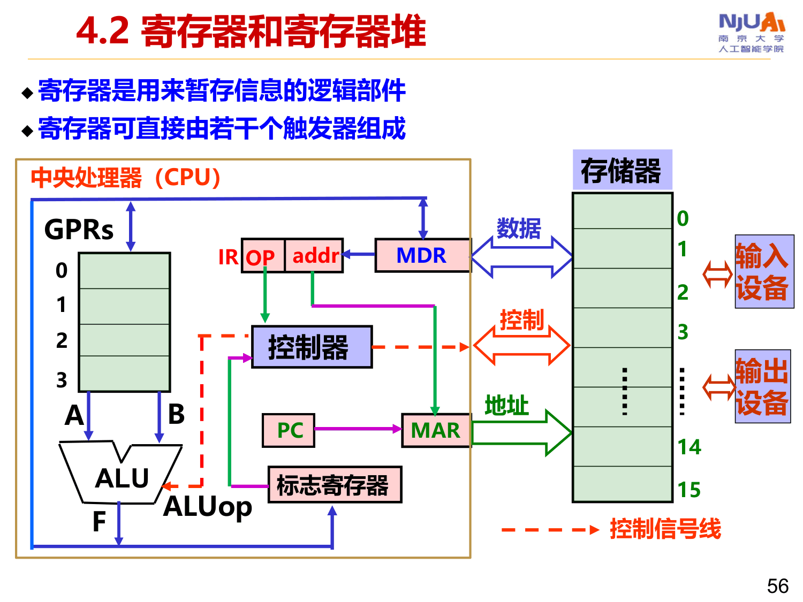
这张图你将来会看上百遍
左边的 CPU 框里几个粉色方块全部是寄存器：
- GPRs（左上的 0/1/2/3 那一列）：通用寄存器堆，存程序中的临时变量。
- IR（OP + addr）：指令寄存器，存当前指令的操作码和地址字段。
- MDR：存储器数据寄存器，CPU 和主存之间的"中转货架"。
- MAR：存储器地址寄存器，送给主存的地址。
- PC：程序计数器。
- 标志寄存器：存运算后的零/进位/溢出等状态位。
右边的"存储器"块是主存
编号 0–15 的格子代表内存单元。CPU 通过 MAR 给出地址、通过 MDR 交换数据。控制器发出读写信号。
跑一条 "从内存读数据"指令的简化流程（预告 chap6）
① 控制器把 PC 的值送到 MAR（MAR ← PC）。这一拍 MAR 这个寄存器被写。
② 主存收到 MAR 的地址，把数据送到数据总线 → MDR ← bus。MDR 寄存器被写。
③ 控制器把 MDR 的值送到 IR（IR ← MDR）。
④ IR.OP 进入控制器，决定下一拍 ALU 做什么。
每一拍都是某一个寄存器的"写使能拉高 + 等 CLK ↑ → 锁存新值"。这就是寄存器在 CPU 里的实际工作方式。
本讲不展开微指令，但你必须意识到 CPU 的本质就是"在每个时钟周期里把某些寄存器更新成新值"。第三讲的同步时序设计法到这里就开始有了现实意义。
4.2 N 位寄存器结构 + 三态门总线
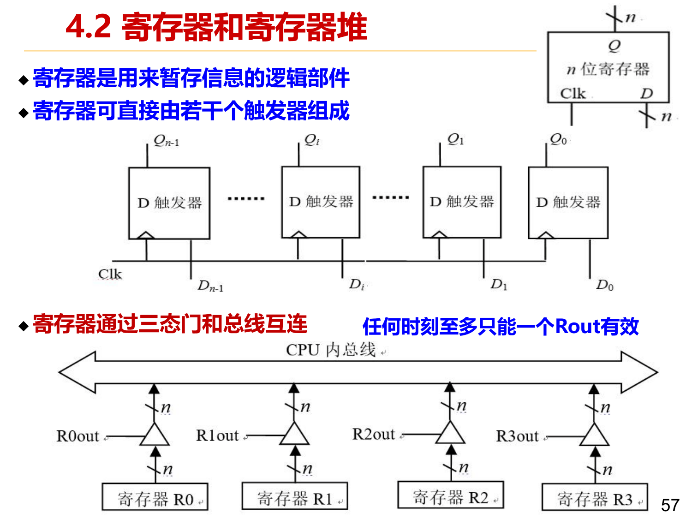
顶部：N 位寄存器内部
就是 N 个 D 触发器并联：
- 共用一根 CLK。
- 每个触发器的 D 端是输入位 D_i；输出是 Q_i。
- 整体上：N 位输入 D[n-1:0]，N 位输出 Q[n-1:0]，一根 CLK。
右上角的符号 n 位寄存器 就是抽象后的方框 —— N 位线打成一根"粗线"，端口标 /n。后面所有数字逻辑图都会用这种简化画法。
底部：多个寄存器挂同一根总线
CPU 内部要在多个寄存器之间传数据，常见做法是用总线 + 三态门：
- 三态门（图中三角形符号）有三种状态：输出 0、输出 1、高阻态 Z（输出和总线断开）。
- 每个寄存器的输出通过一个三态门挂上总线。三态门的使能信号 R_iout 控制"是否把该寄存器的数据送到总线"。
- 红字提醒："任何时刻至多只能一个 Rout 有效" —— 同时多个寄存器抢总线会冲突、烧门。
R1 → R3 数据传输的完整时序
① 控制器拉高 R1out → R1 的内容送上总线（其它寄存器三态门高阻，不干扰）。
② 控制器拉高 R3 的写使能 WE3，CLK ↑ 来一个 → R3 从总线锁存数据。
③ 同一拍 R1out 拉低 → 总线释放。
整个动作在一个时钟周期内完成。CPU 的数据通路设计大量使用这种"三态门 + 总线"结构。
4.2 寄存器堆（Register File / GPRs）定位
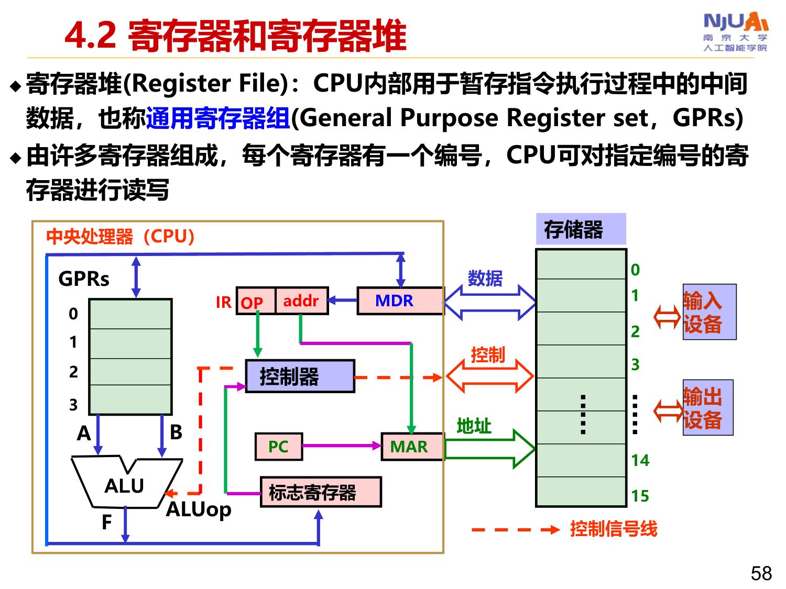
RF 是什么
CPU 内部一组按"编号"访问的寄存器，统称通用寄存器组 (GPRs)。RISC-V 有 x0–x31（32 个 32 位寄存器）；MIPS 同；x86 历史包袱多一些。
访问接口
RF 给 CPU 暴露三个端口：
- 读端口 1：输入 RA（读哪个寄存器的编号），输出该寄存器的数据。
- 读端口 2：输入 RB，输出对应数据。
- 写端口：输入 RW（要写哪个）+ 数据 + 写使能 WE。
为什么要两个读端口
一条典型 ALU 指令 add rd, rs1, rs2 需要同时读出两个源操作数。如果只有 1 个读端口，得分两拍读完 —— 慢一半。所以现代 CPU 的 RF 至少有 2 读 + 1 写（超标量 CPU 甚至 4 读 2 写）。
4.2 寄存器堆端口详解
方框图右侧的端口
设 RF 有 2^k 个寄存器，每个 n 位：
| 端口 | 位宽 | 方向 | 作用 |
|---|---|---|---|
| RA | k | 输入 | 读端口 1 的寄存器编号 |
| busA | n | 输出 | 读端口 1 的数据输出 |
| RB | k | 输入 | 读端口 2 的寄存器编号 |
| busB | n | 输出 | 读端口 2 的数据输出 |
| RW | k | 输入 | 写端口的寄存器编号 |
| busW | n | 输入 | 写端口的数据输入 |
| WE | 1 | 输入 | 写使能 |
| Clk | 1 | 输入 | 时钟 |
读 vs 写的本质区别
- 读操作 = 组合逻辑：RA 一变，busA 立即变（经过译码 + MUX 的延迟）。不依赖 CLK。
- 写操作 = 时序逻辑：busW 上的数据要在 CLK 上升沿到来时才写入 RW 指定的寄存器，且必须 WE=1。
这就是 RF 在时序结构上"半边时序半边组合"的特点。后面 p60 会从内部结构看清原理。
4.2 寄存器堆内部结构
结构三大块
这张图最关键，一定要看清三部分：
- 左边 地址译码器：输入 RW（5 位），输出 32 根独热线（只有编号匹配的那根是 1）。译码器之前学过（组合逻辑）。
- 中间 32 个寄存器：每个是 32 位 D 触发器组。每根独热线接到对应寄存器的"AND 门启用"上 —— 见图中红色小圆圈：地址匹配 ∧ WE ∧ CLK 才能写入。
- 右边两个 32 选 1 MUX：分别由 RA 和 RB 控制选哪个寄存器的输出送到 busA / busB。
跑一条 add x3, x1, x2 指令的 RF 部分
读阶段（组合电路，无需 CLK ↑）：
- ① RA=00001（编号 1）→ 右上 MUX 选第 1 个寄存器的输出 → busA = R1 的值（瞬间出现）。
- ② RB=00010 → 右下 MUX 选第 2 个 → busB = R2 的值。
- ③ busA 和 busB 同时送到 ALU 的两个输入端，ALU 算出结果。
这三步是组合电路，从 RA/RB 输入到 busA/busB 稳定输出只经过"译码 + MUX" 的延迟，不需要时钟边沿。所以这条指令的 ALU 计算可以在当前周期完成。
写阶段（时序电路，依赖 CLK ↑）：
- ④ ALU 算出 R1+R2 的结果，送到 busW。
- ⑤ RW=00011（编号 3）→ 地址译码器输出"第 3 根线 = 1"，其他 31 根 = 0。
- ⑥ WE=1（写使能）。
- ⑦ CLK ↑ 到来 → 只有"第 3 根独热线 ∧ WE ∧ CLK ↑"全部满足的寄存器（即 R3）会从 busW 锁存新值。其他 31 个寄存器的 AND 门都被独热线的 0 卡住，触发器看不到有效的 D 输入 → 不变。
整条指令的 RF 部分一拍完成：读读读 → 算 → 写。这就是 single-cycle CPU 的基础。
移位寄存器有什么用 — 不是"为了移而移"
三类典型应用
- 串行/并行转换：CPU 内部数据是并行的（32 位一起走），但通信接口（UART、SPI、USB）是串行的（一根线一位一位发）。移位寄存器是两者之间的桥：并行装入 → 每个时钟移出一位（变串行）；反过来串行进入 → 攒满 N 拍 → 并行读出。
- 乘法/除法：二进制
x << 1= x×2；x >> 1= x÷2（无符号）。乘法器、除法器内部反复用到移位。 - CRC、LFSR：循环冗余校验、伪随机数生成器，都基于带反馈的移位寄存器结构。
移位 vs 计数器对比
| 计数器 | 移位寄存器 | |
|---|---|---|
| 每拍的变化 | +1 或 -1 | 整体左移/右移一位 |
| 触发器之间 | 逻辑（AND/Carry）相连 | 直接 Q→D 串联 |
| 用途 | 计数、分频、PC | 串并转换、移位运算 |
本节学习路径
- p61：最朴素的"4 个 D 触发器串成右移"。
- p62：商用 74X194 通用移位寄存器的功能（保持/左移/右移/载入 4 模式）。
- p63-64：揭开 74X194 内部 —— 每位前面塞一个 4 选 1 MUX。
- p65：桶形移位寄存器（barrel shifter）—— 一拍内移任意位数，但它其实是组合电路，不是时序！
4.3 串入串出右移寄存器 · 4 个 D 触发器串联
电路结构
4 个 D 触发器从左到右排列：
- 最左边触发器的 D 接外部输入 X（串行输入）。
- 第二个触发器的 D 接第一个的 Q（即 Q3 接到第二个的 D）。
- 依此类推：Q3 → D2，Q2 → D1，Q1 → D0。
- 所有触发器共用 CLK。
注意图中触发器是从左到右编号 Q3、Q2、Q1、Q0（即左边是高位）。每个 CLK ↑ 把每个触发器存的值"传给右边的邻居"，左边空出来由 X 填补。这就是右移。
跑一遍：初始 Q3Q2Q1Q0 = 0000，X 序列 = 1,0,0,1,1,0,1,1（从左向右进入，每拍一位）
CLK ↑ 1 (X=1)：左边触发器吃 X=1 → Q3=1。其它触发器吃左边邻居的上一拍值（都是 0）→ Q2Q1Q0=000。结果 = 1000。
CLK ↑ 2 (X=0)：Q3 ← X=0；Q2 ← 上一拍的 Q3=1；Q1 ← 上一拍的 Q2=0；Q0 ← 上一拍的 Q1=0。结果 = 0100。原来的 1 被推到了右边。
CLK ↑ 3 (X=0)：Q3=0, Q2=0(原Q3), Q1=1(原Q2), Q0=0(原Q1)。结果 = 0010。
CLK ↑ 4 (X=1)：Q3=1, Q2=0, Q1=0, Q0=1。结果 = 1001。
CLK ↑ 5 (X=1)：结果 = 1100。注意：第 1 拍进来的 1 已经被推到 Q0，第 5 拍 CLK ↑ 后会"掉出"右端 —— 这就是"串行输出"。
继续：0110, 1011, 1101（对应教材给的序列）。
串行输出
Q0 就是"串行输出端" —— 进来的位经过 4 拍后从这里出去。如果只接 Q0 当输出端、不管 Q3Q2Q1，就是一个"4 拍延迟器"。这种结构在数字滤波器、通信协议里频繁出现。
串入并出
如果同时把 Q3Q2Q1Q0 引出当并行输出端，移位 4 拍后并行读 → 就是串入并出 (SIPO)，UART 接收器就是这种。
4.3 74X194 · 4 位通用移位寄存器
什么是"通用"
74X194 集成 4 种操作模式于一身：
| S1 | S0 | 功能 | 说明 |
|---|---|---|---|
| 0 | 0 | Hold 保持 | 所有 Q 不变，CLK ↑ 也不动 |
| 0 | 1 | Shift right 右移 | QA ← RIN, QB ← QA, QC ← QB, QD ← QC |
| 1 | 0 | Shift left 左移 | QD ← LIN, QC ← QD, QB ← QC, QA ← QB |
| 1 | 1 | Load 载入 | QA ← A, QB ← B, QC ← C, QD ← D（并行装入） |
另外 CLR=1 时无条件清零（一般是异步清零，开机用）。
引脚说明
- CLK：时钟。
- S1, S0：模式选择（看上表）。
- RIN / LIN：串行输入端口（右移时从 RIN 进来；左移时从 LIN 进来）。
- A,B,C,D：并行装入端口。
- QA,QB,QC,QD：四位输出。
4.3 74X194 · 内部结构图
每位前面塞了一个 4 选 1 MUX
这张图密度大，但本质就一句话：每个 D 触发器的 D 端接一个 4 选 1 MUX，由 S1S0 选择"该写什么进来"。看右侧从上到下四个触发器，每个前面都有四根候选输入线（标 10/00/11/01）：
| S1S0 | 选哪条 | 语义 |
|---|---|---|
| 00 | 当前 Q（自反馈） | 保持 |
| 01 | 左边邻居的 Q | 右移 |
| 10 | 右边邻居的 Q | 左移 |
| 11 | 并行装入 D 输入 | 载入 |
关键观察：QB 这根线（图中蓝色箭头）
QB（第二位的 Q 输出）被引到三个地方：
- QA 的 MUX 的"右移输入" —— 因为 QA 右移时要吃左邻居 QB 的值。等等，这取决于编号顺序，看下面 p64 详解。
- QC 的 MUX 的"左移输入"。
- QB 自己的 MUX 的"保持输入"（自反馈）。
这就是为什么"每个 Q 输出都要扇出三根线"。整个芯片的连接看起来复杂，但每位的逻辑都长一个样。
4.3 74X194 · 单位 MUX 方程
聚焦一位 (取 QC 为代表) 的 MUX 内部
从图上四个 AND 门 + 一个 OR 门可以读出：
四项分别对应四种模式
| 项 | S1S0 | 启用时 D_i 等于 | 语义 |
|---|---|---|---|
| S̄1·S̄0·Q_i | 00 | Q_i（自身） | 保持 |
| S̄1·S0·Q_{i-1} | 01 | 下标小一位的邻居 Q | 右移（书的定义下，向上移） |
| S1·S̄0·Q_{i+1} | 10 | 下标大一位的邻居 Q | 左移（向下移） |
| S1·S0·IN_i | 11 | 并行输入 IN_i | 载入 |
四个 AND 项中只有一个会被 S1S0 选通"激活"，其它三个被 0 卡住。OR 把激活的那个汇总输出。
跑一遍：从 0000 起，S1S0=11（载入）→ S1S0=01（右移）→ 观察
设 ABCD=1011（并行输入端口）。
第 1 拍 S1S0=11，CLK ↑：每位 MUX 选第 4 项 → 每个 Q_i 锁存 IN_i。QAQBQCQD = 1011。
第 2 拍 S1S0=01（右移），RIN=0：每位 MUX 选第 2 项 Q_{i-1}。所以 QA ← RIN=0; QB ← 上拍 QA=1; QC ← 上拍 QB=0; QD ← 上拍 QC=1。结果 = 0101。
第 3 拍 S1S0=01，RIN=1：QA ← RIN=1; QB ← 0; QC ← 1; QD ← 0。结果 = 1010。
整个过程一目了然：S1S0 控制模式，CLK 控制何时动。74X194 是数字逻辑里最经典的"小巧通用部件"之一。
4.3 桶形移位寄存器 (Barrel Shifter)
这页提到"桶形移位寄存器"，但本质上它不是时序电路！
注意红字："桶形移位寄存器：组合逻辑电路，采用大量多路选择器实现"。它和前面 74X194 完全不同 ——
| 74X194 移位寄存器 | 桶形移位寄存器 | |
|---|---|---|
| 电路类别 | 时序（有触发器） | 纯组合（无触发器） |
| 每拍能移几位 | 1 位 | 任意位数（一拍内） |
| 核心元件 | D 触发器 + MUX | 纯 MUX 阵列 |
| 用途 | 串并转换、数据暂存 | CPU 的 shifter 单元（如 SLL/SRL 指令） |
电路结构
4 位桶形移位寄存器 = 4 个并联的 4 选 1 MUX。每个 MUX 的 4 个输入分别接到原始数据的不同位置：
- Y0 的 MUX 输入：D0、D1、D2、D3（不旋转/旋转 1/2/3 位时 Y0 应取的来源）。
- Y1 的 MUX 输入：D1、D2、D3、D0（注意顺序）。
- ……
所有 MUX 共用同一对选择线 S1S0（要移几位）。
功能表
| S1S0 | Y3 | Y2 | Y1 | Y0 | 操作 |
|---|---|---|---|---|---|
| 00 | D3 | D2 | D1 | D0 | No rotation |
| 01 | D2 | D1 | D0 | D3 | Rotate 1 |
| 10 | D1 | D0 | D3 | D2 | Rotate 2 |
| 11 | D0 | D3 | D2 | D1 | Rotate 3 |
为什么 CPU 需要它
RISC-V 的 SLL rd, rs1, rs2（左移）指令必须在一个时钟周期内完成"把 rs1 左移 rs2 位"。如果用 74X194 那样的串行移位寄存器，移 31 位要 31 个时钟周期 —— 不可接受。所以 ALU 内部专门有一个桶形移位单元，用纯组合电路一拍出结果。代价是 N 位桶形移位器需要 N×log₂N 量级的 MUX。
第 4 章 时序逻辑电路 · 全章总结
回到章节封面页，再看一遍四讲：① 概述 ② 锁存器和触发器 ③ 同步时序电路设计 ④ 典型部件设计。下面我把整章的认知地图收个尾：
整章的"认知地图"
需求层 ：FSM (状态机) ── 第一讲 ↓ 设计层 ：同步时序设计六步流水线 ── 第三讲 ↓ 元件层 ：D / JK / T 触发器 ── 第二讲 ↓ 部件层 ：计数器 / 寄存器堆 / 移位寄存器 ── 第四讲 ↓ 系统层 ：CPU 数据通路（第六章会展开）
本章学完你拥有的能力
- 能从一句话需求设计一个完整同步时序电路（含状态化简、编码、F/G 推导、电路图、自启动分析、定时分析）。
- 能看懂任何用 D 触发器搭建的电路并跑出它的时序波形。
- 能识别计数器、寄存器、移位寄存器三大典型部件的内部结构和外部接口。
- 明白 CPU 的本质：每个时钟周期更新一组寄存器的值。
下一步
第 5 章 FPGA 与 HDL 会教你用 Verilog 把本章学的东西敲出来跑在板子上。第 6 章 运算方法和运算部件 会用本章的寄存器/计数器去搭加法器、乘除器、ALU。整章的工具是后面所有课程的地基，值得反复回看。